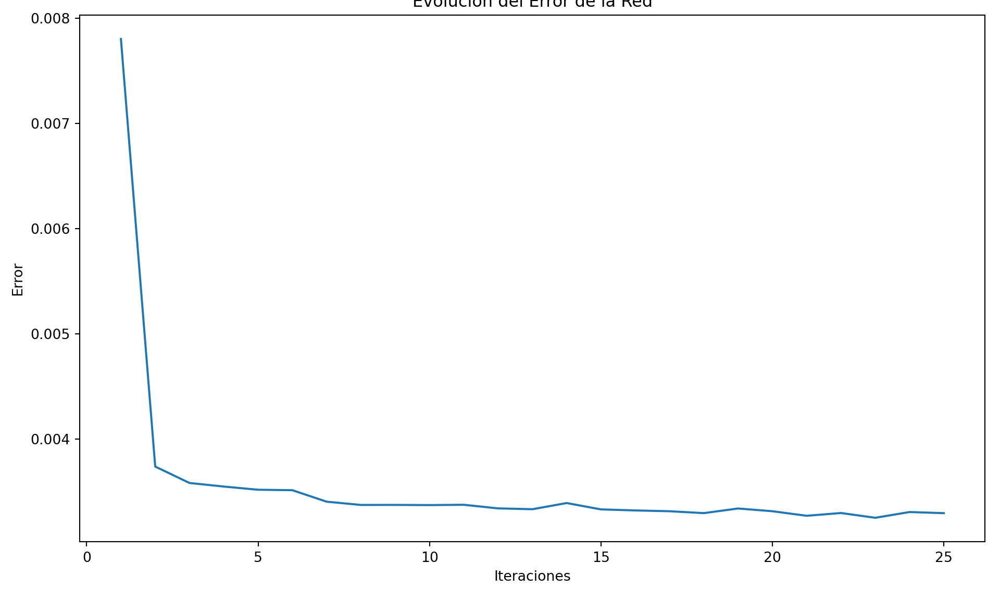
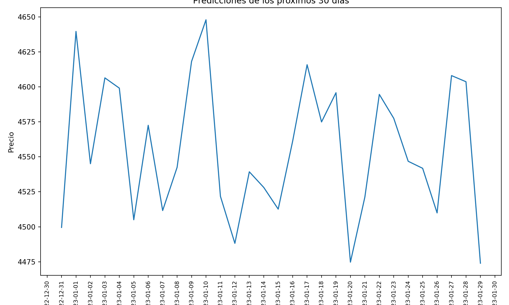
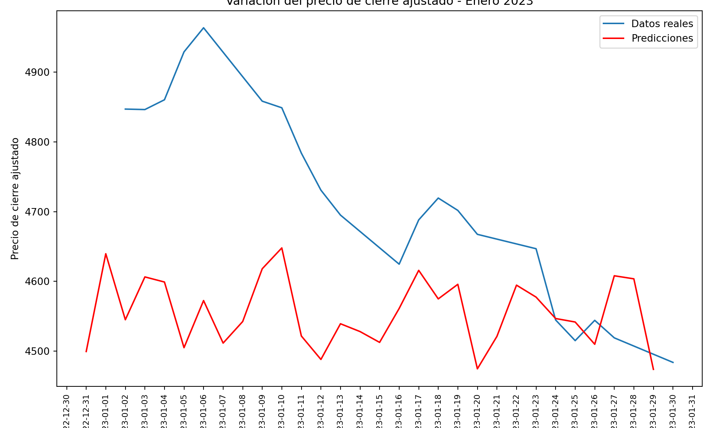

Capitulo 10 Red Neuronal Recurrente-ELMAN
import pandas as pd
import numpy as np
from sklearn.preprocessing import MinMaxScaler
from keras.models import Sequential
from keras.layers import Dense, SimpleRNN
import matplotlib.pyplot as plt
scaler = MinMaxScaler(feature_range=(0, 1))
scaled_data = scaler.fit_transform(data["Adj Close"].values.reshape(-1, 1))
train_size = int(len(scaled_data) * 0.75)
train_data = scaled_data[:train_size]
test_data = scaled_data[train_size:]
sequence_length = 30
def create_sequences(data, sequence_length):
X = []
y = []
for i in range(len(data) - sequence_length - 30):
X.append(data[i:i+sequence_length])
y.append(data[i+sequence_length:i+sequence_length+30])
return np.array(X), np.array(y)
X_train, y_train = create_sequences(train_data, sequence_length)
X_test, y_test = create_sequences(test_data, sequence_length)
# Crear el modelo Elman
model = Sequential()
model.add(SimpleRNN(32, input_shape=(sequence_length, 1), activation='relu', return_sequences=True))
model.add(Dense(30))
model.compile(optimizer='adam', loss='mean_squared_error')
errors = []
# Entrenar el modelo
for i in range(25):
history = model.fit(X_train, y_train, epochs=1, batch_size=1, verbose=0)
error = history.history['loss'][0]
errors.append(error)
# Graficar el error de la red a lo largo de las iteraciones
plt.plot(range(1, 26), errors)
plt.xlabel("Iteraciones")
plt.ylabel("Error")
plt.title("Evolución del Error de la Red")
plt.show() El gráfico muestra la evolución del error de la red neuronal a lo largo de las iteraciones de entrenamiento. En el eje x se representan las iteraciones y en el eje y se muestra el valor del error.
Observamos que inicialmente el error disminuye rápidamente en las primeras 2 iteraciones aproximadamente, lo que indica que el modelo está aprendiendo y mejorando su capacidad para hacer predicciones. Luego, a partir de alrededor de la iteración 2, la curva del error comienza a descender de manera más suave y gradual.
Notamos que después de alrededor de 17 iteraciones, el error se estabiliza, lo que significa que el modelo ha alcanzado un punto en el que su rendimiento ya no mejora significativamente con más iteraciones de entrenamiento.
Este comportamiento de la curva de error sugiere que el modelo alcanza una etapa de convergencia después de aproximadamente 17 iteraciones, lo cual es un indicio de que ha aprendido los patrones en los datos y puede realizar predicciones con un nivel aceptable de precisión.
import pandas as pd
import numpy as np
from sklearn.preprocessing import MinMaxScaler
from keras.models import Sequential
from keras.layers import Dense, SimpleRNN
from datetime import datetime, timedelta
scaler = MinMaxScaler(feature_range=(0, 1))
scaled_data = scaler.fit_transform(data["Adj Close"].values.reshape(-1, 1))
train_size = int(len(scaled_data) * 0.75)
train_data = scaled_data[:train_size]
test_data = scaled_data[train_size:]
sequence_length = 30
def create_sequences(data, sequence_length):
X = []
y = []
for i in range(len(data) - sequence_length - 30):
X.append(data[i:i+sequence_length])
y.append(data[i+sequence_length:i+sequence_length+30])
return np.array(X), np.array(y)
X_train, y_train = create_sequences(train_data, sequence_length)
X_test, y_test = create_sequences(test_data, sequence_length)
# Crear el modelo Elman
model = Sequential()
model.add(SimpleRNN(32, input_shape=(sequence_length, 1), activation='relu', return_sequences=True))
model.add(Dense(30))
model.compile(optimizer='adam', loss='mean_squared_error')
# Entrenar el modelo
model.fit(X_train, y_train, epochs=20, batch_size=1)
# Evaluar el modelo## Epoch 1/20
##
## 1/1113 [..............................] - ETA: 35:33 - loss: 0.3052
## 7/1113 [..............................] - ETA: 10s - loss: 0.0873
## 12/1113 [..............................] - ETA: 10s - loss: 0.0689
## 19/1113 [..............................] - ETA: 10s - loss: 0.0683
## 24/1113 [..............................] - ETA: 10s - loss: 0.0560
## 29/1113 [..............................] - ETA: 10s - loss: 0.0529
## 34/1113 [..............................] - ETA: 10s - loss: 0.0558
## 39/1113 [>.............................] - ETA: 10s - loss: 0.0597
## 44/1113 [>.............................] - ETA: 11s - loss: 0.0550
## 49/1113 [>.............................] - ETA: 11s - loss: 0.0501
## 54/1113 [>.............................] - ETA: 11s - loss: 0.0470
## 59/1113 [>.............................] - ETA: 10s - loss: 0.0454
## 65/1113 [>.............................] - ETA: 10s - loss: 0.0423
## 70/1113 [>.............................] - ETA: 10s - loss: 0.0400
## 75/1113 [=>............................] - ETA: 10s - loss: 0.0383
## 80/1113 [=>............................] - ETA: 10s - loss: 0.0372
## 86/1113 [=>............................] - ETA: 10s - loss: 0.0359
## 94/1113 [=>............................] - ETA: 10s - loss: 0.0336
## 102/1113 [=>............................] - ETA: 9s - loss: 0.0314
## 110/1113 [=>............................] - ETA: 9s - loss: 0.0299
## 115/1113 [==>...........................] - ETA: 9s - loss: 0.0291
## 120/1113 [==>...........................] - ETA: 9s - loss: 0.0282
## 125/1113 [==>...........................] - ETA: 9s - loss: 0.0273
## 130/1113 [==>...........................] - ETA: 9s - loss: 0.0266
## 135/1113 [==>...........................] - ETA: 9s - loss: 0.0261
## 141/1113 [==>...........................] - ETA: 9s - loss: 0.0252
## 150/1113 [===>..........................] - ETA: 9s - loss: 0.0241
## 156/1113 [===>..........................] - ETA: 8s - loss: 0.0234
## 161/1113 [===>..........................] - ETA: 8s - loss: 0.0229
## 166/1113 [===>..........................] - ETA: 8s - loss: 0.0223
## 171/1113 [===>..........................] - ETA: 9s - loss: 0.0218
## 176/1113 [===>..........................] - ETA: 8s - loss: 0.0213
## 183/1113 [===>..........................] - ETA: 8s - loss: 0.0207
## 188/1113 [====>.........................] - ETA: 8s - loss: 0.0203
## 193/1113 [====>.........................] - ETA: 8s - loss: 0.0199
## 199/1113 [====>.........................] - ETA: 8s - loss: 0.0194
## 205/1113 [====>.........................] - ETA: 8s - loss: 0.0190
## 211/1113 [====>.........................] - ETA: 8s - loss: 0.0187
## 216/1113 [====>.........................] - ETA: 8s - loss: 0.0185
## 221/1113 [====>.........................] - ETA: 8s - loss: 0.0182
## 226/1113 [=====>........................] - ETA: 8s - loss: 0.0180
## 231/1113 [=====>........................] - ETA: 8s - loss: 0.0177
## 239/1113 [=====>........................] - ETA: 8s - loss: 0.0173
## 248/1113 [=====>........................] - ETA: 8s - loss: 0.0171
## 255/1113 [=====>........................] - ETA: 8s - loss: 0.0169
## 260/1113 [======>.......................] - ETA: 8s - loss: 0.0168
## 266/1113 [======>.......................] - ETA: 7s - loss: 0.0166
## 275/1113 [======>.......................] - ETA: 7s - loss: 0.0164
## 284/1113 [======>.......................] - ETA: 7s - loss: 0.0161
## 293/1113 [======>.......................] - ETA: 7s - loss: 0.0158
## 300/1113 [=======>......................] - ETA: 7s - loss: 0.0157
## 305/1113 [=======>......................] - ETA: 7s - loss: 0.0155
## 310/1113 [=======>......................] - ETA: 7s - loss: 0.0153
## 315/1113 [=======>......................] - ETA: 7s - loss: 0.0151
## 320/1113 [=======>......................] - ETA: 7s - loss: 0.0151
## 325/1113 [=======>......................] - ETA: 7s - loss: 0.0149
## 333/1113 [=======>......................] - ETA: 7s - loss: 0.0147
## 341/1113 [========>.....................] - ETA: 7s - loss: 0.0145
## 347/1113 [========>.....................] - ETA: 7s - loss: 0.0143
## 352/1113 [========>.....................] - ETA: 7s - loss: 0.0141
## 357/1113 [========>.....................] - ETA: 6s - loss: 0.0140
## 362/1113 [========>.....................] - ETA: 6s - loss: 0.0138
## 367/1113 [========>.....................] - ETA: 6s - loss: 0.0138
## 373/1113 [=========>....................] - ETA: 6s - loss: 0.0136
## 379/1113 [=========>....................] - ETA: 6s - loss: 0.0135
## 385/1113 [=========>....................] - ETA: 6s - loss: 0.0134
## 390/1113 [=========>....................] - ETA: 6s - loss: 0.0133
## 395/1113 [=========>....................] - ETA: 6s - loss: 0.0131
## 400/1113 [=========>....................] - ETA: 6s - loss: 0.0130
## 406/1113 [=========>....................] - ETA: 6s - loss: 0.0128
## 412/1113 [==========>...................] - ETA: 6s - loss: 0.0127
## 420/1113 [==========>...................] - ETA: 6s - loss: 0.0125
## 428/1113 [==========>...................] - ETA: 6s - loss: 0.0123
## 434/1113 [==========>...................] - ETA: 6s - loss: 0.0123
## 439/1113 [==========>...................] - ETA: 6s - loss: 0.0122
## 445/1113 [==========>...................] - ETA: 6s - loss: 0.0122
## 450/1113 [===========>..................] - ETA: 6s - loss: 0.0121
## 455/1113 [===========>..................] - ETA: 6s - loss: 0.0120
## 460/1113 [===========>..................] - ETA: 6s - loss: 0.0119
## 465/1113 [===========>..................] - ETA: 6s - loss: 0.0118
## 470/1113 [===========>..................] - ETA: 6s - loss: 0.0117
## 475/1113 [===========>..................] - ETA: 5s - loss: 0.0117
## 480/1113 [===========>..................] - ETA: 5s - loss: 0.0116
## 485/1113 [============>.................] - ETA: 5s - loss: 0.0116
## 490/1113 [============>.................] - ETA: 5s - loss: 0.0115
## 495/1113 [============>.................] - ETA: 5s - loss: 0.0115
## 500/1113 [============>.................] - ETA: 5s - loss: 0.0115
## 505/1113 [============>.................] - ETA: 5s - loss: 0.0114
## 510/1113 [============>.................] - ETA: 5s - loss: 0.0113
## 515/1113 [============>.................] - ETA: 5s - loss: 0.0112
## 520/1113 [=============>................] - ETA: 5s - loss: 0.0112
## 525/1113 [=============>................] - ETA: 5s - loss: 0.0111
## 531/1113 [=============>................] - ETA: 5s - loss: 0.0110
## 537/1113 [=============>................] - ETA: 5s - loss: 0.0109
## 541/1113 [=============>................] - ETA: 5s - loss: 0.0108
## 548/1113 [=============>................] - ETA: 5s - loss: 0.0107
## 553/1113 [=============>................] - ETA: 5s - loss: 0.0107
## 557/1113 [==============>...............] - ETA: 5s - loss: 0.0107
## 564/1113 [==============>...............] - ETA: 5s - loss: 0.0106
## 571/1113 [==============>...............] - ETA: 5s - loss: 0.0105
## 577/1113 [==============>...............] - ETA: 5s - loss: 0.0104
## 582/1113 [==============>...............] - ETA: 5s - loss: 0.0104
## 589/1113 [==============>...............] - ETA: 4s - loss: 0.0103
## 596/1113 [===============>..............] - ETA: 4s - loss: 0.0102
## 602/1113 [===============>..............] - ETA: 4s - loss: 0.0102
## 606/1113 [===============>..............] - ETA: 4s - loss: 0.0102
## 611/1113 [===============>..............] - ETA: 4s - loss: 0.0102
## 618/1113 [===============>..............] - ETA: 4s - loss: 0.0102
## 626/1113 [===============>..............] - ETA: 4s - loss: 0.0101
## 634/1113 [================>.............] - ETA: 4s - loss: 0.0100
## 642/1113 [================>.............] - ETA: 4s - loss: 0.0101
## 650/1113 [================>.............] - ETA: 4s - loss: 0.0100
## 658/1113 [================>.............] - ETA: 4s - loss: 0.0099
## 666/1113 [================>.............] - ETA: 4s - loss: 0.0099
## 673/1113 [=================>............] - ETA: 4s - loss: 0.0098
## 680/1113 [=================>............] - ETA: 4s - loss: 0.0098
## 688/1113 [=================>............] - ETA: 3s - loss: 0.0097
## 696/1113 [=================>............] - ETA: 3s - loss: 0.0097
## 704/1113 [=================>............] - ETA: 3s - loss: 0.0097
## 710/1113 [==================>...........] - ETA: 3s - loss: 0.0096
## 716/1113 [==================>...........] - ETA: 3s - loss: 0.0096
## 722/1113 [==================>...........] - ETA: 3s - loss: 0.0095
## 728/1113 [==================>...........] - ETA: 3s - loss: 0.0095
## 734/1113 [==================>...........] - ETA: 3s - loss: 0.0094
## 741/1113 [==================>...........] - ETA: 3s - loss: 0.0094
## 747/1113 [===================>..........] - ETA: 3s - loss: 0.0093
## 754/1113 [===================>..........] - ETA: 3s - loss: 0.0093
## 761/1113 [===================>..........] - ETA: 3s - loss: 0.0092
## 768/1113 [===================>..........] - ETA: 3s - loss: 0.0091
## 775/1113 [===================>..........] - ETA: 3s - loss: 0.0091
## 780/1113 [====================>.........] - ETA: 3s - loss: 0.0090
## 787/1113 [====================>.........] - ETA: 2s - loss: 0.0090
## 793/1113 [====================>.........] - ETA: 2s - loss: 0.0090
## 798/1113 [====================>.........] - ETA: 2s - loss: 0.0089
## 805/1113 [====================>.........] - ETA: 2s - loss: 0.0089
## 811/1113 [====================>.........] - ETA: 2s - loss: 0.0089
## 816/1113 [====================>.........] - ETA: 2s - loss: 0.0088
## 821/1113 [=====================>........] - ETA: 2s - loss: 0.0088
## 826/1113 [=====================>........] - ETA: 2s - loss: 0.0087
## 832/1113 [=====================>........] - ETA: 2s - loss: 0.0088
## 838/1113 [=====================>........] - ETA: 2s - loss: 0.0087
## 845/1113 [=====================>........] - ETA: 2s - loss: 0.0087
## 852/1113 [=====================>........] - ETA: 2s - loss: 0.0086
## 859/1113 [======================>.......] - ETA: 2s - loss: 0.0086
## 867/1113 [======================>.......] - ETA: 2s - loss: 0.0085
## 875/1113 [======================>.......] - ETA: 2s - loss: 0.0085
## 882/1113 [======================>.......] - ETA: 2s - loss: 0.0084
## 890/1113 [======================>.......] - ETA: 2s - loss: 0.0084
## 897/1113 [=======================>......] - ETA: 1s - loss: 0.0083
## 904/1113 [=======================>......] - ETA: 1s - loss: 0.0083
## 912/1113 [=======================>......] - ETA: 1s - loss: 0.0082
## 920/1113 [=======================>......] - ETA: 1s - loss: 0.0082
## 928/1113 [========================>.....] - ETA: 1s - loss: 0.0082
## 935/1113 [========================>.....] - ETA: 1s - loss: 0.0081
## 942/1113 [========================>.....] - ETA: 1s - loss: 0.0081
## 948/1113 [========================>.....] - ETA: 1s - loss: 0.0081
## 955/1113 [========================>.....] - ETA: 1s - loss: 0.0080
## 961/1113 [========================>.....] - ETA: 1s - loss: 0.0080
## 967/1113 [=========================>....] - ETA: 1s - loss: 0.0080
## 973/1113 [=========================>....] - ETA: 1s - loss: 0.0081
## 979/1113 [=========================>....] - ETA: 1s - loss: 0.0080
## 985/1113 [=========================>....] - ETA: 1s - loss: 0.0080
## 993/1113 [=========================>....] - ETA: 1s - loss: 0.0080
## 1001/1113 [=========================>....] - ETA: 0s - loss: 0.0079
## 1009/1113 [==========================>...] - ETA: 0s - loss: 0.0079
## 1016/1113 [==========================>...] - ETA: 0s - loss: 0.0078
## 1023/1113 [==========================>...] - ETA: 0s - loss: 0.0078
## 1030/1113 [==========================>...] - ETA: 0s - loss: 0.0078
## 1035/1113 [==========================>...] - ETA: 0s - loss: 0.0078
## 1040/1113 [===========================>..] - ETA: 0s - loss: 0.0078
## 1046/1113 [===========================>..] - ETA: 0s - loss: 0.0077
## 1051/1113 [===========================>..] - ETA: 0s - loss: 0.0077
## 1056/1113 [===========================>..] - ETA: 0s - loss: 0.0077
## 1061/1113 [===========================>..] - ETA: 0s - loss: 0.0077
## 1066/1113 [===========================>..] - ETA: 0s - loss: 0.0077
## 1071/1113 [===========================>..] - ETA: 0s - loss: 0.0076
## 1076/1113 [============================>.] - ETA: 0s - loss: 0.0076
## 1081/1113 [============================>.] - ETA: 0s - loss: 0.0076
## 1087/1113 [============================>.] - ETA: 0s - loss: 0.0076
## 1095/1113 [============================>.] - ETA: 0s - loss: 0.0076
## 1103/1113 [============================>.] - ETA: 0s - loss: 0.0076
## 1112/1113 [============================>.] - ETA: 0s - loss: 0.0075
## 1113/1113 [==============================] - 12s 9ms/step - loss: 0.0075
## Epoch 2/20
##
## 1/1113 [..............................] - ETA: 11s - loss: 2.5902e-04
## 6/1113 [..............................] - ETA: 12s - loss: 0.0021
## 11/1113 [..............................] - ETA: 12s - loss: 0.0022
## 16/1113 [..............................] - ETA: 12s - loss: 0.0060
## 21/1113 [..............................] - ETA: 12s - loss: 0.0051
## 28/1113 [..............................] - ETA: 11s - loss: 0.0045
## 36/1113 [..............................] - ETA: 10s - loss: 0.0038
## 41/1113 [>.............................] - ETA: 10s - loss: 0.0036
## 46/1113 [>.............................] - ETA: 10s - loss: 0.0034
## 51/1113 [>.............................] - ETA: 10s - loss: 0.0046
## 58/1113 [>.............................] - ETA: 10s - loss: 0.0042
## 65/1113 [>.............................] - ETA: 10s - loss: 0.0041
## 73/1113 [>.............................] - ETA: 9s - loss: 0.0038
## 81/1113 [=>............................] - ETA: 9s - loss: 0.0037
## 89/1113 [=>............................] - ETA: 9s - loss: 0.0035
## 96/1113 [=>............................] - ETA: 8s - loss: 0.0035
## 103/1113 [=>............................] - ETA: 8s - loss: 0.0034
## 111/1113 [=>............................] - ETA: 8s - loss: 0.0032
## 119/1113 [==>...........................] - ETA: 8s - loss: 0.0032
## 126/1113 [==>...........................] - ETA: 8s - loss: 0.0032
## 133/1113 [==>...........................] - ETA: 8s - loss: 0.0031
## 141/1113 [==>...........................] - ETA: 7s - loss: 0.0031
## 149/1113 [===>..........................] - ETA: 7s - loss: 0.0034
## 156/1113 [===>..........................] - ETA: 7s - loss: 0.0033
## 163/1113 [===>..........................] - ETA: 7s - loss: 0.0033
## 169/1113 [===>..........................] - ETA: 7s - loss: 0.0033
## 174/1113 [===>..........................] - ETA: 7s - loss: 0.0032
## 179/1113 [===>..........................] - ETA: 7s - loss: 0.0031
## 184/1113 [===>..........................] - ETA: 7s - loss: 0.0032
## 190/1113 [====>.........................] - ETA: 7s - loss: 0.0031
## 198/1113 [====>.........................] - ETA: 7s - loss: 0.0031
## 205/1113 [====>.........................] - ETA: 7s - loss: 0.0031
## 211/1113 [====>.........................] - ETA: 7s - loss: 0.0031
## 218/1113 [====>.........................] - ETA: 7s - loss: 0.0032
## 226/1113 [=====>........................] - ETA: 7s - loss: 0.0032
## 234/1113 [=====>........................] - ETA: 7s - loss: 0.0031
## 242/1113 [=====>........................] - ETA: 7s - loss: 0.0031
## 250/1113 [=====>........................] - ETA: 7s - loss: 0.0034
## 256/1113 [=====>........................] - ETA: 6s - loss: 0.0034
## 263/1113 [======>.......................] - ETA: 6s - loss: 0.0035
## 270/1113 [======>.......................] - ETA: 6s - loss: 0.0036
## 275/1113 [======>.......................] - ETA: 6s - loss: 0.0037
## 280/1113 [======>.......................] - ETA: 6s - loss: 0.0036
## 286/1113 [======>.......................] - ETA: 6s - loss: 0.0037
## 293/1113 [======>.......................] - ETA: 6s - loss: 0.0037
## 299/1113 [=======>......................] - ETA: 6s - loss: 0.0037
## 304/1113 [=======>......................] - ETA: 6s - loss: 0.0036
## 309/1113 [=======>......................] - ETA: 6s - loss: 0.0036
## 314/1113 [=======>......................] - ETA: 6s - loss: 0.0036
## 319/1113 [=======>......................] - ETA: 6s - loss: 0.0035
## 324/1113 [=======>......................] - ETA: 6s - loss: 0.0035
## 329/1113 [=======>......................] - ETA: 6s - loss: 0.0035
## 334/1113 [========>.....................] - ETA: 6s - loss: 0.0035
## 339/1113 [========>.....................] - ETA: 6s - loss: 0.0035
## 344/1113 [========>.....................] - ETA: 6s - loss: 0.0035
## 349/1113 [========>.....................] - ETA: 6s - loss: 0.0035
## 354/1113 [========>.....................] - ETA: 6s - loss: 0.0034
## 360/1113 [========>.....................] - ETA: 6s - loss: 0.0034
## 366/1113 [========>.....................] - ETA: 6s - loss: 0.0034
## 371/1113 [=========>....................] - ETA: 6s - loss: 0.0034
## 378/1113 [=========>....................] - ETA: 6s - loss: 0.0034
## 383/1113 [=========>....................] - ETA: 6s - loss: 0.0034
## 388/1113 [=========>....................] - ETA: 6s - loss: 0.0034
## 395/1113 [=========>....................] - ETA: 6s - loss: 0.0034
## 400/1113 [=========>....................] - ETA: 6s - loss: 0.0035
## 404/1113 [=========>....................] - ETA: 6s - loss: 0.0035
## 409/1113 [==========>...................] - ETA: 6s - loss: 0.0036
## 414/1113 [==========>...................] - ETA: 6s - loss: 0.0036
## 421/1113 [==========>...................] - ETA: 6s - loss: 0.0036
## 429/1113 [==========>...................] - ETA: 6s - loss: 0.0038
## 436/1113 [==========>...................] - ETA: 5s - loss: 0.0037
## 441/1113 [==========>...................] - ETA: 5s - loss: 0.0038
## 446/1113 [===========>..................] - ETA: 5s - loss: 0.0038
## 452/1113 [===========>..................] - ETA: 5s - loss: 0.0038
## 460/1113 [===========>..................] - ETA: 5s - loss: 0.0038
## 465/1113 [===========>..................] - ETA: 5s - loss: 0.0038
## 470/1113 [===========>..................] - ETA: 5s - loss: 0.0038
## 477/1113 [===========>..................] - ETA: 5s - loss: 0.0037
## 483/1113 [============>.................] - ETA: 5s - loss: 0.0037
## 488/1113 [============>.................] - ETA: 5s - loss: 0.0037
## 495/1113 [============>.................] - ETA: 5s - loss: 0.0037
## 501/1113 [============>.................] - ETA: 5s - loss: 0.0036
## 506/1113 [============>.................] - ETA: 5s - loss: 0.0036
## 511/1113 [============>.................] - ETA: 5s - loss: 0.0036
## 516/1113 [============>.................] - ETA: 5s - loss: 0.0036
## 522/1113 [=============>................] - ETA: 5s - loss: 0.0036
## 530/1113 [=============>................] - ETA: 5s - loss: 0.0036
## 535/1113 [=============>................] - ETA: 5s - loss: 0.0036
## 541/1113 [=============>................] - ETA: 5s - loss: 0.0036
## 546/1113 [=============>................] - ETA: 5s - loss: 0.0036
## 551/1113 [=============>................] - ETA: 5s - loss: 0.0036
## 557/1113 [==============>...............] - ETA: 5s - loss: 0.0036
## 562/1113 [==============>...............] - ETA: 5s - loss: 0.0036
## 567/1113 [==============>...............] - ETA: 4s - loss: 0.0035
## 574/1113 [==============>...............] - ETA: 4s - loss: 0.0035
## 579/1113 [==============>...............] - ETA: 4s - loss: 0.0035
## 584/1113 [==============>...............] - ETA: 4s - loss: 0.0035
## 589/1113 [==============>...............] - ETA: 4s - loss: 0.0035
## 594/1113 [===============>..............] - ETA: 4s - loss: 0.0035
## 600/1113 [===============>..............] - ETA: 4s - loss: 0.0035
## 605/1113 [===============>..............] - ETA: 4s - loss: 0.0035
## 610/1113 [===============>..............] - ETA: 4s - loss: 0.0035
## 615/1113 [===============>..............] - ETA: 4s - loss: 0.0034
## 621/1113 [===============>..............] - ETA: 4s - loss: 0.0034
## 626/1113 [===============>..............] - ETA: 4s - loss: 0.0034
## 631/1113 [================>.............] - ETA: 4s - loss: 0.0034
## 636/1113 [================>.............] - ETA: 4s - loss: 0.0034
## 641/1113 [================>.............] - ETA: 4s - loss: 0.0034
## 646/1113 [================>.............] - ETA: 4s - loss: 0.0034
## 652/1113 [================>.............] - ETA: 4s - loss: 0.0034
## 660/1113 [================>.............] - ETA: 4s - loss: 0.0034
## 667/1113 [================>.............] - ETA: 4s - loss: 0.0034
## 674/1113 [=================>............] - ETA: 4s - loss: 0.0034
## 681/1113 [=================>............] - ETA: 3s - loss: 0.0034
## 688/1113 [=================>............] - ETA: 3s - loss: 0.0034
## 697/1113 [=================>............] - ETA: 3s - loss: 0.0034
## 705/1113 [==================>...........] - ETA: 3s - loss: 0.0034
## 714/1113 [==================>...........] - ETA: 3s - loss: 0.0034
## 722/1113 [==================>...........] - ETA: 3s - loss: 0.0034
## 730/1113 [==================>...........] - ETA: 3s - loss: 0.0035
## 738/1113 [==================>...........] - ETA: 3s - loss: 0.0036
## 745/1113 [===================>..........] - ETA: 3s - loss: 0.0036
## 752/1113 [===================>..........] - ETA: 3s - loss: 0.0036
## 759/1113 [===================>..........] - ETA: 3s - loss: 0.0036
## 764/1113 [===================>..........] - ETA: 3s - loss: 0.0035
## 769/1113 [===================>..........] - ETA: 3s - loss: 0.0035
## 774/1113 [===================>..........] - ETA: 3s - loss: 0.0036
## 779/1113 [===================>..........] - ETA: 3s - loss: 0.0036
## 784/1113 [====================>.........] - ETA: 2s - loss: 0.0036
## 789/1113 [====================>.........] - ETA: 2s - loss: 0.0036
## 794/1113 [====================>.........] - ETA: 2s - loss: 0.0036
## 799/1113 [====================>.........] - ETA: 2s - loss: 0.0036
## 804/1113 [====================>.........] - ETA: 2s - loss: 0.0036
## 809/1113 [====================>.........] - ETA: 2s - loss: 0.0036
## 814/1113 [====================>.........] - ETA: 2s - loss: 0.0036
## 819/1113 [=====================>........] - ETA: 2s - loss: 0.0036
## 824/1113 [=====================>........] - ETA: 2s - loss: 0.0036
## 829/1113 [=====================>........] - ETA: 2s - loss: 0.0036
## 835/1113 [=====================>........] - ETA: 2s - loss: 0.0036
## 843/1113 [=====================>........] - ETA: 2s - loss: 0.0037
## 850/1113 [=====================>........] - ETA: 2s - loss: 0.0037
## 855/1113 [======================>.......] - ETA: 2s - loss: 0.0037
## 860/1113 [======================>.......] - ETA: 2s - loss: 0.0038
## 865/1113 [======================>.......] - ETA: 2s - loss: 0.0038
## 871/1113 [======================>.......] - ETA: 2s - loss: 0.0038
## 877/1113 [======================>.......] - ETA: 2s - loss: 0.0037
## 883/1113 [======================>.......] - ETA: 2s - loss: 0.0037
## 890/1113 [======================>.......] - ETA: 2s - loss: 0.0037
## 897/1113 [=======================>......] - ETA: 1s - loss: 0.0037
## 903/1113 [=======================>......] - ETA: 1s - loss: 0.0037
## 909/1113 [=======================>......] - ETA: 1s - loss: 0.0037
## 914/1113 [=======================>......] - ETA: 1s - loss: 0.0037
## 921/1113 [=======================>......] - ETA: 1s - loss: 0.0037
## 929/1113 [========================>.....] - ETA: 1s - loss: 0.0037
## 937/1113 [========================>.....] - ETA: 1s - loss: 0.0037
## 942/1113 [========================>.....] - ETA: 1s - loss: 0.0037
## 947/1113 [========================>.....] - ETA: 1s - loss: 0.0037
## 952/1113 [========================>.....] - ETA: 1s - loss: 0.0037
## 957/1113 [========================>.....] - ETA: 1s - loss: 0.0037
## 962/1113 [========================>.....] - ETA: 1s - loss: 0.0037
## 967/1113 [=========================>....] - ETA: 1s - loss: 0.0037
## 973/1113 [=========================>....] - ETA: 1s - loss: 0.0037
## 978/1113 [=========================>....] - ETA: 1s - loss: 0.0037
## 984/1113 [=========================>....] - ETA: 1s - loss: 0.0037
## 990/1113 [=========================>....] - ETA: 1s - loss: 0.0037
## 995/1113 [=========================>....] - ETA: 1s - loss: 0.0037
## 1000/1113 [=========================>....] - ETA: 1s - loss: 0.0037
## 1005/1113 [==========================>...] - ETA: 0s - loss: 0.0037
## 1010/1113 [==========================>...] - ETA: 0s - loss: 0.0037
## 1015/1113 [==========================>...] - ETA: 0s - loss: 0.0037
## 1020/1113 [==========================>...] - ETA: 0s - loss: 0.0037
## 1025/1113 [==========================>...] - ETA: 0s - loss: 0.0037
## 1030/1113 [==========================>...] - ETA: 0s - loss: 0.0037
## 1035/1113 [==========================>...] - ETA: 0s - loss: 0.0037
## 1040/1113 [===========================>..] - ETA: 0s - loss: 0.0037
## 1045/1113 [===========================>..] - ETA: 0s - loss: 0.0037
## 1051/1113 [===========================>..] - ETA: 0s - loss: 0.0037
## 1057/1113 [===========================>..] - ETA: 0s - loss: 0.0037
## 1063/1113 [===========================>..] - ETA: 0s - loss: 0.0037
## 1068/1113 [===========================>..] - ETA: 0s - loss: 0.0037
## 1073/1113 [===========================>..] - ETA: 0s - loss: 0.0038
## 1078/1113 [============================>.] - ETA: 0s - loss: 0.0038
## 1083/1113 [============================>.] - ETA: 0s - loss: 0.0038
## 1088/1113 [============================>.] - ETA: 0s - loss: 0.0038
## 1093/1113 [============================>.] - ETA: 0s - loss: 0.0038
## 1099/1113 [============================>.] - ETA: 0s - loss: 0.0038
## 1104/1113 [============================>.] - ETA: 0s - loss: 0.0038
## 1109/1113 [============================>.] - ETA: 0s - loss: 0.0038
## 1113/1113 [==============================] - 10s 9ms/step - loss: 0.0038
## Epoch 3/20
##
## 1/1113 [..............................] - ETA: 9s - loss: 0.0017
## 6/1113 [..............................] - ETA: 12s - loss: 0.0030
## 11/1113 [..............................] - ETA: 11s - loss: 0.0054
## 16/1113 [..............................] - ETA: 11s - loss: 0.0043
## 21/1113 [..............................] - ETA: 11s - loss: 0.0035
## 26/1113 [..............................] - ETA: 11s - loss: 0.0036
## 31/1113 [..............................] - ETA: 11s - loss: 0.0038
## 36/1113 [..............................] - ETA: 11s - loss: 0.0050
## 41/1113 [>.............................] - ETA: 11s - loss: 0.0047
## 46/1113 [>.............................] - ETA: 11s - loss: 0.0045
## 51/1113 [>.............................] - ETA: 11s - loss: 0.0041
## 56/1113 [>.............................] - ETA: 11s - loss: 0.0039
## 61/1113 [>.............................] - ETA: 11s - loss: 0.0039
## 66/1113 [>.............................] - ETA: 10s - loss: 0.0038
## 71/1113 [>.............................] - ETA: 10s - loss: 0.0040
## 76/1113 [=>............................] - ETA: 10s - loss: 0.0039
## 81/1113 [=>............................] - ETA: 10s - loss: 0.0038
## 86/1113 [=>............................] - ETA: 10s - loss: 0.0037
## 91/1113 [=>............................] - ETA: 10s - loss: 0.0036
## 96/1113 [=>............................] - ETA: 10s - loss: 0.0036
## 101/1113 [=>............................] - ETA: 10s - loss: 0.0039
## 106/1113 [=>............................] - ETA: 10s - loss: 0.0039
## 111/1113 [=>............................] - ETA: 10s - loss: 0.0038
## 116/1113 [==>...........................] - ETA: 10s - loss: 0.0037
## 122/1113 [==>...........................] - ETA: 10s - loss: 0.0036
## 127/1113 [==>...........................] - ETA: 10s - loss: 0.0035
## 132/1113 [==>...........................] - ETA: 10s - loss: 0.0035
## 137/1113 [==>...........................] - ETA: 10s - loss: 0.0035
## 142/1113 [==>...........................] - ETA: 10s - loss: 0.0035
## 147/1113 [==>...........................] - ETA: 10s - loss: 0.0035
## 152/1113 [===>..........................] - ETA: 10s - loss: 0.0035
## 157/1113 [===>..........................] - ETA: 10s - loss: 0.0035
## 162/1113 [===>..........................] - ETA: 10s - loss: 0.0035
## 167/1113 [===>..........................] - ETA: 10s - loss: 0.0035
## 172/1113 [===>..........................] - ETA: 10s - loss: 0.0035
## 177/1113 [===>..........................] - ETA: 10s - loss: 0.0034
## 182/1113 [===>..........................] - ETA: 9s - loss: 0.0034
## 187/1113 [====>.........................] - ETA: 9s - loss: 0.0034
## 192/1113 [====>.........................] - ETA: 9s - loss: 0.0035
## 197/1113 [====>.........................] - ETA: 9s - loss: 0.0035
## 202/1113 [====>.........................] - ETA: 9s - loss: 0.0034
## 207/1113 [====>.........................] - ETA: 9s - loss: 0.0034
## 212/1113 [====>.........................] - ETA: 9s - loss: 0.0034
## 217/1113 [====>.........................] - ETA: 9s - loss: 0.0034
## 222/1113 [====>.........................] - ETA: 9s - loss: 0.0034
## 227/1113 [=====>........................] - ETA: 9s - loss: 0.0034
## 232/1113 [=====>........................] - ETA: 9s - loss: 0.0034
## 237/1113 [=====>........................] - ETA: 9s - loss: 0.0033
## 242/1113 [=====>........................] - ETA: 9s - loss: 0.0033
## 247/1113 [=====>........................] - ETA: 9s - loss: 0.0033
## 252/1113 [=====>........................] - ETA: 9s - loss: 0.0034
## 257/1113 [=====>........................] - ETA: 9s - loss: 0.0033
## 262/1113 [======>.......................] - ETA: 9s - loss: 0.0034
## 267/1113 [======>.......................] - ETA: 9s - loss: 0.0035
## 272/1113 [======>.......................] - ETA: 9s - loss: 0.0034
## 277/1113 [======>.......................] - ETA: 8s - loss: 0.0034
## 282/1113 [======>.......................] - ETA: 8s - loss: 0.0034
## 287/1113 [======>.......................] - ETA: 8s - loss: 0.0034
## 292/1113 [======>.......................] - ETA: 8s - loss: 0.0034
## 297/1113 [=======>......................] - ETA: 8s - loss: 0.0034
## 302/1113 [=======>......................] - ETA: 8s - loss: 0.0034
## 307/1113 [=======>......................] - ETA: 8s - loss: 0.0034
## 312/1113 [=======>......................] - ETA: 8s - loss: 0.0034
## 317/1113 [=======>......................] - ETA: 8s - loss: 0.0035
## 322/1113 [=======>......................] - ETA: 8s - loss: 0.0035
## 327/1113 [=======>......................] - ETA: 8s - loss: 0.0034
## 332/1113 [=======>......................] - ETA: 8s - loss: 0.0034
## 337/1113 [========>.....................] - ETA: 8s - loss: 0.0034
## 342/1113 [========>.....................] - ETA: 8s - loss: 0.0034
## 347/1113 [========>.....................] - ETA: 8s - loss: 0.0035
## 352/1113 [========>.....................] - ETA: 8s - loss: 0.0035
## 357/1113 [========>.....................] - ETA: 8s - loss: 0.0035
## 362/1113 [========>.....................] - ETA: 8s - loss: 0.0035
## 367/1113 [========>.....................] - ETA: 8s - loss: 0.0035
## 372/1113 [=========>....................] - ETA: 8s - loss: 0.0036
## 377/1113 [=========>....................] - ETA: 7s - loss: 0.0036
## 382/1113 [=========>....................] - ETA: 7s - loss: 0.0036
## 387/1113 [=========>....................] - ETA: 7s - loss: 0.0036
## 392/1113 [=========>....................] - ETA: 7s - loss: 0.0037
## 397/1113 [=========>....................] - ETA: 7s - loss: 0.0036
## 402/1113 [=========>....................] - ETA: 7s - loss: 0.0036
## 407/1113 [=========>....................] - ETA: 7s - loss: 0.0036
## 412/1113 [==========>...................] - ETA: 7s - loss: 0.0036
## 417/1113 [==========>...................] - ETA: 7s - loss: 0.0036
## 422/1113 [==========>...................] - ETA: 7s - loss: 0.0036
## 427/1113 [==========>...................] - ETA: 7s - loss: 0.0036
## 432/1113 [==========>...................] - ETA: 7s - loss: 0.0036
## 437/1113 [==========>...................] - ETA: 7s - loss: 0.0036
## 442/1113 [==========>...................] - ETA: 7s - loss: 0.0036
## 447/1113 [===========>..................] - ETA: 7s - loss: 0.0037
## 452/1113 [===========>..................] - ETA: 7s - loss: 0.0038
## 457/1113 [===========>..................] - ETA: 7s - loss: 0.0039
## 463/1113 [===========>..................] - ETA: 6s - loss: 0.0039
## 468/1113 [===========>..................] - ETA: 6s - loss: 0.0041
## 473/1113 [===========>..................] - ETA: 6s - loss: 0.0041
## 478/1113 [===========>..................] - ETA: 6s - loss: 0.0040
## 483/1113 [============>.................] - ETA: 6s - loss: 0.0040
## 488/1113 [============>.................] - ETA: 6s - loss: 0.0040
## 493/1113 [============>.................] - ETA: 6s - loss: 0.0040
## 498/1113 [============>.................] - ETA: 6s - loss: 0.0040
## 503/1113 [============>.................] - ETA: 6s - loss: 0.0040
## 508/1113 [============>.................] - ETA: 6s - loss: 0.0040
## 513/1113 [============>.................] - ETA: 6s - loss: 0.0040
## 518/1113 [============>.................] - ETA: 6s - loss: 0.0039
## 523/1113 [=============>................] - ETA: 6s - loss: 0.0040
## 528/1113 [=============>................] - ETA: 6s - loss: 0.0039
## 534/1113 [=============>................] - ETA: 6s - loss: 0.0039
## 539/1113 [=============>................] - ETA: 6s - loss: 0.0039
## 545/1113 [=============>................] - ETA: 6s - loss: 0.0039
## 550/1113 [=============>................] - ETA: 6s - loss: 0.0039
## 556/1113 [=============>................] - ETA: 5s - loss: 0.0038
## 561/1113 [==============>...............] - ETA: 5s - loss: 0.0040
## 566/1113 [==============>...............] - ETA: 5s - loss: 0.0040
## 572/1113 [==============>...............] - ETA: 5s - loss: 0.0040
## 577/1113 [==============>...............] - ETA: 5s - loss: 0.0039
## 582/1113 [==============>...............] - ETA: 5s - loss: 0.0039
## 587/1113 [==============>...............] - ETA: 5s - loss: 0.0039
## 592/1113 [==============>...............] - ETA: 5s - loss: 0.0039
## 597/1113 [===============>..............] - ETA: 5s - loss: 0.0039
## 602/1113 [===============>..............] - ETA: 5s - loss: 0.0039
## 607/1113 [===============>..............] - ETA: 5s - loss: 0.0039
## 612/1113 [===============>..............] - ETA: 5s - loss: 0.0039
## 618/1113 [===============>..............] - ETA: 5s - loss: 0.0038
## 623/1113 [===============>..............] - ETA: 5s - loss: 0.0038
## 628/1113 [===============>..............] - ETA: 5s - loss: 0.0038
## 634/1113 [================>.............] - ETA: 5s - loss: 0.0038
## 639/1113 [================>.............] - ETA: 5s - loss: 0.0038
## 645/1113 [================>.............] - ETA: 5s - loss: 0.0038
## 651/1113 [================>.............] - ETA: 4s - loss: 0.0038
## 657/1113 [================>.............] - ETA: 4s - loss: 0.0038
## 662/1113 [================>.............] - ETA: 4s - loss: 0.0038
## 667/1113 [================>.............] - ETA: 4s - loss: 0.0038
## 672/1113 [=================>............] - ETA: 4s - loss: 0.0037
## 678/1113 [=================>............] - ETA: 4s - loss: 0.0038
## 683/1113 [=================>............] - ETA: 4s - loss: 0.0037
## 688/1113 [=================>............] - ETA: 4s - loss: 0.0037
## 693/1113 [=================>............] - ETA: 4s - loss: 0.0037
## 699/1113 [=================>............] - ETA: 4s - loss: 0.0037
## 704/1113 [=================>............] - ETA: 4s - loss: 0.0038
## 709/1113 [==================>...........] - ETA: 4s - loss: 0.0037
## 714/1113 [==================>...........] - ETA: 4s - loss: 0.0037
## 719/1113 [==================>...........] - ETA: 4s - loss: 0.0037
## 724/1113 [==================>...........] - ETA: 4s - loss: 0.0038
## 729/1113 [==================>...........] - ETA: 4s - loss: 0.0037
## 734/1113 [==================>...........] - ETA: 4s - loss: 0.0037
## 739/1113 [==================>...........] - ETA: 3s - loss: 0.0037
## 744/1113 [===================>..........] - ETA: 3s - loss: 0.0037
## 749/1113 [===================>..........] - ETA: 3s - loss: 0.0038
## 754/1113 [===================>..........] - ETA: 3s - loss: 0.0038
## 760/1113 [===================>..........] - ETA: 3s - loss: 0.0037
## 764/1113 [===================>..........] - ETA: 3s - loss: 0.0037
## 769/1113 [===================>..........] - ETA: 3s - loss: 0.0037
## 776/1113 [===================>..........] - ETA: 3s - loss: 0.0037
## 784/1113 [====================>.........] - ETA: 3s - loss: 0.0037
## 793/1113 [====================>.........] - ETA: 3s - loss: 0.0037
## 798/1113 [====================>.........] - ETA: 3s - loss: 0.0037
## 803/1113 [====================>.........] - ETA: 3s - loss: 0.0037
## 808/1113 [====================>.........] - ETA: 3s - loss: 0.0037
## 813/1113 [====================>.........] - ETA: 3s - loss: 0.0037
## 818/1113 [=====================>........] - ETA: 3s - loss: 0.0036
## 823/1113 [=====================>........] - ETA: 3s - loss: 0.0036
## 828/1113 [=====================>........] - ETA: 3s - loss: 0.0036
## 833/1113 [=====================>........] - ETA: 2s - loss: 0.0036
## 839/1113 [=====================>........] - ETA: 2s - loss: 0.0036
## 845/1113 [=====================>........] - ETA: 2s - loss: 0.0036
## 850/1113 [=====================>........] - ETA: 2s - loss: 0.0036
## 855/1113 [======================>.......] - ETA: 2s - loss: 0.0036
## 861/1113 [======================>.......] - ETA: 2s - loss: 0.0036
## 866/1113 [======================>.......] - ETA: 2s - loss: 0.0037
## 871/1113 [======================>.......] - ETA: 2s - loss: 0.0036
## 877/1113 [======================>.......] - ETA: 2s - loss: 0.0036
## 882/1113 [======================>.......] - ETA: 2s - loss: 0.0036
## 887/1113 [======================>.......] - ETA: 2s - loss: 0.0036
## 892/1113 [=======================>......] - ETA: 2s - loss: 0.0037
## 897/1113 [=======================>......] - ETA: 2s - loss: 0.0037
## 902/1113 [=======================>......] - ETA: 2s - loss: 0.0037
## 907/1113 [=======================>......] - ETA: 2s - loss: 0.0037
## 912/1113 [=======================>......] - ETA: 2s - loss: 0.0037
## 917/1113 [=======================>......] - ETA: 2s - loss: 0.0037
## 922/1113 [=======================>......] - ETA: 2s - loss: 0.0037
## 927/1113 [=======================>......] - ETA: 1s - loss: 0.0037
## 933/1113 [========================>.....] - ETA: 1s - loss: 0.0037
## 938/1113 [========================>.....] - ETA: 1s - loss: 0.0037
## 943/1113 [========================>.....] - ETA: 1s - loss: 0.0037
## 948/1113 [========================>.....] - ETA: 1s - loss: 0.0037
## 954/1113 [========================>.....] - ETA: 1s - loss: 0.0037
## 960/1113 [========================>.....] - ETA: 1s - loss: 0.0037
## 965/1113 [=========================>....] - ETA: 1s - loss: 0.0037
## 970/1113 [=========================>....] - ETA: 1s - loss: 0.0037
## 975/1113 [=========================>....] - ETA: 1s - loss: 0.0037
## 980/1113 [=========================>....] - ETA: 1s - loss: 0.0037
## 985/1113 [=========================>....] - ETA: 1s - loss: 0.0037
## 990/1113 [=========================>....] - ETA: 1s - loss: 0.0037
## 995/1113 [=========================>....] - ETA: 1s - loss: 0.0036
## 1000/1113 [=========================>....] - ETA: 1s - loss: 0.0036
## 1005/1113 [==========================>...] - ETA: 1s - loss: 0.0036
## 1010/1113 [==========================>...] - ETA: 1s - loss: 0.0036
## 1016/1113 [==========================>...] - ETA: 1s - loss: 0.0036
## 1021/1113 [==========================>...] - ETA: 0s - loss: 0.0037
## 1026/1113 [==========================>...] - ETA: 0s - loss: 0.0037
## 1031/1113 [==========================>...] - ETA: 0s - loss: 0.0037
## 1036/1113 [==========================>...] - ETA: 0s - loss: 0.0037
## 1041/1113 [===========================>..] - ETA: 0s - loss: 0.0037
## 1046/1113 [===========================>..] - ETA: 0s - loss: 0.0037
## 1051/1113 [===========================>..] - ETA: 0s - loss: 0.0037
## 1056/1113 [===========================>..] - ETA: 0s - loss: 0.0037
## 1061/1113 [===========================>..] - ETA: 0s - loss: 0.0037
## 1066/1113 [===========================>..] - ETA: 0s - loss: 0.0037
## 1071/1113 [===========================>..] - ETA: 0s - loss: 0.0037
## 1076/1113 [============================>.] - ETA: 0s - loss: 0.0037
## 1081/1113 [============================>.] - ETA: 0s - loss: 0.0037
## 1086/1113 [============================>.] - ETA: 0s - loss: 0.0037
## 1091/1113 [============================>.] - ETA: 0s - loss: 0.0037
## 1096/1113 [============================>.] - ETA: 0s - loss: 0.0036
## 1101/1113 [============================>.] - ETA: 0s - loss: 0.0036
## 1106/1113 [============================>.] - ETA: 0s - loss: 0.0036
## 1111/1113 [============================>.] - ETA: 0s - loss: 0.0036
## 1113/1113 [==============================] - 12s 11ms/step - loss: 0.0036
## Epoch 4/20
##
## 1/1113 [..............................] - ETA: 12s - loss: 0.0027
## 6/1113 [..............................] - ETA: 12s - loss: 0.0034
## 11/1113 [..............................] - ETA: 12s - loss: 0.0024
## 16/1113 [..............................] - ETA: 11s - loss: 0.0023
## 21/1113 [..............................] - ETA: 11s - loss: 0.0021
## 26/1113 [..............................] - ETA: 11s - loss: 0.0020
## 31/1113 [..............................] - ETA: 11s - loss: 0.0022
## 37/1113 [..............................] - ETA: 11s - loss: 0.0024
## 44/1113 [>.............................] - ETA: 10s - loss: 0.0022
## 51/1113 [>.............................] - ETA: 10s - loss: 0.0028
## 59/1113 [>.............................] - ETA: 9s - loss: 0.0026
## 68/1113 [>.............................] - ETA: 9s - loss: 0.0030
## 77/1113 [=>............................] - ETA: 8s - loss: 0.0032
## 84/1113 [=>............................] - ETA: 8s - loss: 0.0031
## 93/1113 [=>............................] - ETA: 8s - loss: 0.0029
## 102/1113 [=>............................] - ETA: 8s - loss: 0.0033
## 109/1113 [=>............................] - ETA: 8s - loss: 0.0034
## 115/1113 [==>...........................] - ETA: 8s - loss: 0.0036
## 121/1113 [==>...........................] - ETA: 8s - loss: 0.0035
## 128/1113 [==>...........................] - ETA: 7s - loss: 0.0035
## 136/1113 [==>...........................] - ETA: 7s - loss: 0.0035
## 141/1113 [==>...........................] - ETA: 7s - loss: 0.0035
## 146/1113 [==>...........................] - ETA: 7s - loss: 0.0035
## 151/1113 [===>..........................] - ETA: 7s - loss: 0.0037
## 156/1113 [===>..........................] - ETA: 8s - loss: 0.0036
## 161/1113 [===>..........................] - ETA: 8s - loss: 0.0036
## 166/1113 [===>..........................] - ETA: 8s - loss: 0.0037
## 171/1113 [===>..........................] - ETA: 8s - loss: 0.0037
## 176/1113 [===>..........................] - ETA: 8s - loss: 0.0036
## 181/1113 [===>..........................] - ETA: 8s - loss: 0.0035
## 186/1113 [====>.........................] - ETA: 8s - loss: 0.0038
## 190/1113 [====>.........................] - ETA: 8s - loss: 0.0037
## 196/1113 [====>.........................] - ETA: 8s - loss: 0.0037
## 201/1113 [====>.........................] - ETA: 8s - loss: 0.0041
## 206/1113 [====>.........................] - ETA: 8s - loss: 0.0040
## 211/1113 [====>.........................] - ETA: 8s - loss: 0.0040
## 217/1113 [====>.........................] - ETA: 8s - loss: 0.0040
## 223/1113 [=====>........................] - ETA: 8s - loss: 0.0043
## 228/1113 [=====>........................] - ETA: 8s - loss: 0.0043
## 233/1113 [=====>........................] - ETA: 8s - loss: 0.0043
## 238/1113 [=====>........................] - ETA: 8s - loss: 0.0043
## 243/1113 [=====>........................] - ETA: 8s - loss: 0.0044
## 248/1113 [=====>........................] - ETA: 8s - loss: 0.0043
## 253/1113 [=====>........................] - ETA: 8s - loss: 0.0043
## 258/1113 [=====>........................] - ETA: 8s - loss: 0.0043
## 263/1113 [======>.......................] - ETA: 8s - loss: 0.0043
## 268/1113 [======>.......................] - ETA: 7s - loss: 0.0042
## 276/1113 [======>.......................] - ETA: 7s - loss: 0.0044
## 285/1113 [======>.......................] - ETA: 7s - loss: 0.0044
## 294/1113 [======>.......................] - ETA: 7s - loss: 0.0043
## 302/1113 [=======>......................] - ETA: 7s - loss: 0.0043
## 307/1113 [=======>......................] - ETA: 7s - loss: 0.0042
## 312/1113 [=======>......................] - ETA: 7s - loss: 0.0042
## 317/1113 [=======>......................] - ETA: 7s - loss: 0.0042
## 322/1113 [=======>......................] - ETA: 7s - loss: 0.0042
## 327/1113 [=======>......................] - ETA: 7s - loss: 0.0041
## 332/1113 [=======>......................] - ETA: 7s - loss: 0.0041
## 337/1113 [========>.....................] - ETA: 7s - loss: 0.0041
## 342/1113 [========>.....................] - ETA: 7s - loss: 0.0041
## 347/1113 [========>.....................] - ETA: 7s - loss: 0.0041
## 352/1113 [========>.....................] - ETA: 7s - loss: 0.0041
## 357/1113 [========>.....................] - ETA: 7s - loss: 0.0041
## 362/1113 [========>.....................] - ETA: 7s - loss: 0.0040
## 368/1113 [========>.....................] - ETA: 6s - loss: 0.0040
## 376/1113 [=========>....................] - ETA: 6s - loss: 0.0039
## 382/1113 [=========>....................] - ETA: 6s - loss: 0.0039
## 389/1113 [=========>....................] - ETA: 6s - loss: 0.0039
## 397/1113 [=========>....................] - ETA: 6s - loss: 0.0038
## 404/1113 [=========>....................] - ETA: 6s - loss: 0.0039
## 409/1113 [==========>...................] - ETA: 6s - loss: 0.0039
## 414/1113 [==========>...................] - ETA: 6s - loss: 0.0039
## 419/1113 [==========>...................] - ETA: 6s - loss: 0.0039
## 424/1113 [==========>...................] - ETA: 6s - loss: 0.0038
## 431/1113 [==========>...................] - ETA: 6s - loss: 0.0038
## 438/1113 [==========>...................] - ETA: 6s - loss: 0.0038
## 445/1113 [==========>...................] - ETA: 6s - loss: 0.0038
## 452/1113 [===========>..................] - ETA: 6s - loss: 0.0038
## 457/1113 [===========>..................] - ETA: 6s - loss: 0.0037
## 462/1113 [===========>..................] - ETA: 6s - loss: 0.0037
## 467/1113 [===========>..................] - ETA: 6s - loss: 0.0037
## 472/1113 [===========>..................] - ETA: 5s - loss: 0.0037
## 477/1113 [===========>..................] - ETA: 5s - loss: 0.0037
## 482/1113 [===========>..................] - ETA: 5s - loss: 0.0037
## 487/1113 [============>.................] - ETA: 5s - loss: 0.0037
## 490/1113 [============>.................] - ETA: 5s - loss: 0.0037
## 497/1113 [============>.................] - ETA: 5s - loss: 0.0037
## 504/1113 [============>.................] - ETA: 5s - loss: 0.0037
## 511/1113 [============>.................] - ETA: 5s - loss: 0.0036
## 516/1113 [============>.................] - ETA: 5s - loss: 0.0036
## 521/1113 [=============>................] - ETA: 5s - loss: 0.0036
## 526/1113 [=============>................] - ETA: 5s - loss: 0.0036
## 533/1113 [=============>................] - ETA: 5s - loss: 0.0036
## 538/1113 [=============>................] - ETA: 5s - loss: 0.0036
## 544/1113 [=============>................] - ETA: 5s - loss: 0.0036
## 550/1113 [=============>................] - ETA: 5s - loss: 0.0036
## 555/1113 [=============>................] - ETA: 5s - loss: 0.0036
## 560/1113 [==============>...............] - ETA: 5s - loss: 0.0036
## 565/1113 [==============>...............] - ETA: 5s - loss: 0.0036
## 570/1113 [==============>...............] - ETA: 5s - loss: 0.0036
## 574/1113 [==============>...............] - ETA: 5s - loss: 0.0037
## 578/1113 [==============>...............] - ETA: 5s - loss: 0.0036
## 583/1113 [==============>...............] - ETA: 5s - loss: 0.0037
## 588/1113 [==============>...............] - ETA: 4s - loss: 0.0036
## 593/1113 [==============>...............] - ETA: 4s - loss: 0.0036
## 598/1113 [===============>..............] - ETA: 4s - loss: 0.0036
## 603/1113 [===============>..............] - ETA: 4s - loss: 0.0037
## 609/1113 [===============>..............] - ETA: 4s - loss: 0.0037
## 615/1113 [===============>..............] - ETA: 4s - loss: 0.0036
## 620/1113 [===============>..............] - ETA: 4s - loss: 0.0036
## 625/1113 [===============>..............] - ETA: 4s - loss: 0.0036
## 630/1113 [===============>..............] - ETA: 4s - loss: 0.0037
## 636/1113 [================>.............] - ETA: 4s - loss: 0.0036
## 641/1113 [================>.............] - ETA: 4s - loss: 0.0036
## 646/1113 [================>.............] - ETA: 4s - loss: 0.0036
## 651/1113 [================>.............] - ETA: 4s - loss: 0.0036
## 656/1113 [================>.............] - ETA: 4s - loss: 0.0036
## 661/1113 [================>.............] - ETA: 4s - loss: 0.0036
## 666/1113 [================>.............] - ETA: 4s - loss: 0.0036
## 672/1113 [=================>............] - ETA: 4s - loss: 0.0036
## 678/1113 [=================>............] - ETA: 4s - loss: 0.0036
## 683/1113 [=================>............] - ETA: 4s - loss: 0.0036
## 688/1113 [=================>............] - ETA: 4s - loss: 0.0036
## 693/1113 [=================>............] - ETA: 4s - loss: 0.0036
## 698/1113 [=================>............] - ETA: 4s - loss: 0.0036
## 703/1113 [=================>............] - ETA: 3s - loss: 0.0036
## 709/1113 [==================>...........] - ETA: 3s - loss: 0.0036
## 715/1113 [==================>...........] - ETA: 3s - loss: 0.0036
## 720/1113 [==================>...........] - ETA: 3s - loss: 0.0036
## 725/1113 [==================>...........] - ETA: 3s - loss: 0.0035
## 730/1113 [==================>...........] - ETA: 3s - loss: 0.0036
## 735/1113 [==================>...........] - ETA: 3s - loss: 0.0036
## 740/1113 [==================>...........] - ETA: 3s - loss: 0.0036
## 745/1113 [===================>..........] - ETA: 3s - loss: 0.0036
## 750/1113 [===================>..........] - ETA: 3s - loss: 0.0036
## 755/1113 [===================>..........] - ETA: 3s - loss: 0.0036
## 760/1113 [===================>..........] - ETA: 3s - loss: 0.0036
## 765/1113 [===================>..........] - ETA: 3s - loss: 0.0037
## 770/1113 [===================>..........] - ETA: 3s - loss: 0.0037
## 776/1113 [===================>..........] - ETA: 3s - loss: 0.0036
## 781/1113 [====================>.........] - ETA: 3s - loss: 0.0037
## 786/1113 [====================>.........] - ETA: 3s - loss: 0.0037
## 791/1113 [====================>.........] - ETA: 3s - loss: 0.0036
## 796/1113 [====================>.........] - ETA: 3s - loss: 0.0036
## 802/1113 [====================>.........] - ETA: 3s - loss: 0.0036
## 807/1113 [====================>.........] - ETA: 2s - loss: 0.0036
## 812/1113 [====================>.........] - ETA: 2s - loss: 0.0036
## 817/1113 [=====================>........] - ETA: 2s - loss: 0.0036
## 822/1113 [=====================>........] - ETA: 2s - loss: 0.0036
## 828/1113 [=====================>........] - ETA: 2s - loss: 0.0036
## 834/1113 [=====================>........] - ETA: 2s - loss: 0.0036
## 839/1113 [=====================>........] - ETA: 2s - loss: 0.0036
## 844/1113 [=====================>........] - ETA: 2s - loss: 0.0036
## 849/1113 [=====================>........] - ETA: 2s - loss: 0.0036
## 854/1113 [======================>.......] - ETA: 2s - loss: 0.0036
## 860/1113 [======================>.......] - ETA: 2s - loss: 0.0037
## 866/1113 [======================>.......] - ETA: 2s - loss: 0.0036
## 872/1113 [======================>.......] - ETA: 2s - loss: 0.0036
## 877/1113 [======================>.......] - ETA: 2s - loss: 0.0037
## 883/1113 [======================>.......] - ETA: 2s - loss: 0.0037
## 888/1113 [======================>.......] - ETA: 2s - loss: 0.0036
## 893/1113 [=======================>......] - ETA: 2s - loss: 0.0037
## 898/1113 [=======================>......] - ETA: 2s - loss: 0.0037
## 903/1113 [=======================>......] - ETA: 2s - loss: 0.0037
## 909/1113 [=======================>......] - ETA: 1s - loss: 0.0037
## 914/1113 [=======================>......] - ETA: 1s - loss: 0.0037
## 919/1113 [=======================>......] - ETA: 1s - loss: 0.0037
## 924/1113 [=======================>......] - ETA: 1s - loss: 0.0037
## 929/1113 [========================>.....] - ETA: 1s - loss: 0.0037
## 934/1113 [========================>.....] - ETA: 1s - loss: 0.0037
## 939/1113 [========================>.....] - ETA: 1s - loss: 0.0037
## 944/1113 [========================>.....] - ETA: 1s - loss: 0.0036
## 949/1113 [========================>.....] - ETA: 1s - loss: 0.0036
## 954/1113 [========================>.....] - ETA: 1s - loss: 0.0036
## 959/1113 [========================>.....] - ETA: 1s - loss: 0.0036
## 964/1113 [========================>.....] - ETA: 1s - loss: 0.0036
## 969/1113 [=========================>....] - ETA: 1s - loss: 0.0036
## 974/1113 [=========================>....] - ETA: 1s - loss: 0.0036
## 979/1113 [=========================>....] - ETA: 1s - loss: 0.0036
## 984/1113 [=========================>....] - ETA: 1s - loss: 0.0036
## 989/1113 [=========================>....] - ETA: 1s - loss: 0.0036
## 994/1113 [=========================>....] - ETA: 1s - loss: 0.0036
## 999/1113 [=========================>....] - ETA: 1s - loss: 0.0036
## 1004/1113 [==========================>...] - ETA: 1s - loss: 0.0036
## 1009/1113 [==========================>...] - ETA: 1s - loss: 0.0036
## 1014/1113 [==========================>...] - ETA: 0s - loss: 0.0036
## 1019/1113 [==========================>...] - ETA: 0s - loss: 0.0036
## 1025/1113 [==========================>...] - ETA: 0s - loss: 0.0036
## 1030/1113 [==========================>...] - ETA: 0s - loss: 0.0036
## 1035/1113 [==========================>...] - ETA: 0s - loss: 0.0036
## 1041/1113 [===========================>..] - ETA: 0s - loss: 0.0036
## 1046/1113 [===========================>..] - ETA: 0s - loss: 0.0036
## 1051/1113 [===========================>..] - ETA: 0s - loss: 0.0036
## 1057/1113 [===========================>..] - ETA: 0s - loss: 0.0036
## 1062/1113 [===========================>..] - ETA: 0s - loss: 0.0036
## 1067/1113 [===========================>..] - ETA: 0s - loss: 0.0035
## 1072/1113 [===========================>..] - ETA: 0s - loss: 0.0036
## 1078/1113 [============================>.] - ETA: 0s - loss: 0.0036
## 1083/1113 [============================>.] - ETA: 0s - loss: 0.0036
## 1088/1113 [============================>.] - ETA: 0s - loss: 0.0035
## 1094/1113 [============================>.] - ETA: 0s - loss: 0.0035
## 1099/1113 [============================>.] - ETA: 0s - loss: 0.0035
## 1104/1113 [============================>.] - ETA: 0s - loss: 0.0035
## 1109/1113 [============================>.] - ETA: 0s - loss: 0.0035
## 1113/1113 [==============================] - 11s 10ms/step - loss: 0.0035
## Epoch 5/20
##
## 1/1113 [..............................] - ETA: 12s - loss: 0.0018
## 6/1113 [..............................] - ETA: 11s - loss: 0.0030
## 11/1113 [..............................] - ETA: 11s - loss: 0.0052
## 16/1113 [..............................] - ETA: 11s - loss: 0.0051
## 21/1113 [..............................] - ETA: 11s - loss: 0.0050
## 26/1113 [..............................] - ETA: 11s - loss: 0.0048
## 31/1113 [..............................] - ETA: 10s - loss: 0.0058
## 36/1113 [..............................] - ETA: 11s - loss: 0.0053
## 41/1113 [>.............................] - ETA: 10s - loss: 0.0058
## 47/1113 [>.............................] - ETA: 10s - loss: 0.0055
## 53/1113 [>.............................] - ETA: 10s - loss: 0.0056
## 58/1113 [>.............................] - ETA: 10s - loss: 0.0054
## 64/1113 [>.............................] - ETA: 10s - loss: 0.0052
## 69/1113 [>.............................] - ETA: 10s - loss: 0.0049
## 75/1113 [=>............................] - ETA: 10s - loss: 0.0047
## 80/1113 [=>............................] - ETA: 10s - loss: 0.0045
## 86/1113 [=>............................] - ETA: 10s - loss: 0.0043
## 91/1113 [=>............................] - ETA: 10s - loss: 0.0045
## 97/1113 [=>............................] - ETA: 10s - loss: 0.0044
## 102/1113 [=>............................] - ETA: 10s - loss: 0.0043
## 108/1113 [=>............................] - ETA: 10s - loss: 0.0042
## 114/1113 [==>...........................] - ETA: 10s - loss: 0.0041
## 119/1113 [==>...........................] - ETA: 10s - loss: 0.0040
## 124/1113 [==>...........................] - ETA: 9s - loss: 0.0040
## 129/1113 [==>...........................] - ETA: 9s - loss: 0.0040
## 134/1113 [==>...........................] - ETA: 9s - loss: 0.0039
## 139/1113 [==>...........................] - ETA: 9s - loss: 0.0038
## 144/1113 [==>...........................] - ETA: 9s - loss: 0.0038
## 149/1113 [===>..........................] - ETA: 9s - loss: 0.0038
## 154/1113 [===>..........................] - ETA: 9s - loss: 0.0037
## 159/1113 [===>..........................] - ETA: 9s - loss: 0.0037
## 164/1113 [===>..........................] - ETA: 9s - loss: 0.0036
## 169/1113 [===>..........................] - ETA: 9s - loss: 0.0036
## 174/1113 [===>..........................] - ETA: 9s - loss: 0.0035
## 180/1113 [===>..........................] - ETA: 9s - loss: 0.0035
## 186/1113 [====>.........................] - ETA: 9s - loss: 0.0035
## 192/1113 [====>.........................] - ETA: 9s - loss: 0.0034
## 197/1113 [====>.........................] - ETA: 9s - loss: 0.0034
## 202/1113 [====>.........................] - ETA: 9s - loss: 0.0034
## 207/1113 [====>.........................] - ETA: 9s - loss: 0.0035
## 212/1113 [====>.........................] - ETA: 9s - loss: 0.0034
## 217/1113 [====>.........................] - ETA: 9s - loss: 0.0034
## 225/1113 [=====>........................] - ETA: 8s - loss: 0.0033
## 235/1113 [=====>........................] - ETA: 8s - loss: 0.0033
## 245/1113 [=====>........................] - ETA: 8s - loss: 0.0033
## 260/1113 [======>.......................] - ETA: 7s - loss: 0.0032
## 276/1113 [======>.......................] - ETA: 7s - loss: 0.0033
## 292/1113 [======>.......................] - ETA: 7s - loss: 0.0034
## 308/1113 [=======>......................] - ETA: 6s - loss: 0.0034
## 325/1113 [=======>......................] - ETA: 6s - loss: 0.0034
## 339/1113 [========>.....................] - ETA: 6s - loss: 0.0033
## 354/1113 [========>.....................] - ETA: 5s - loss: 0.0033
## 370/1113 [========>.....................] - ETA: 5s - loss: 0.0032
## 385/1113 [=========>....................] - ETA: 5s - loss: 0.0033
## 399/1113 [=========>....................] - ETA: 5s - loss: 0.0032
## 415/1113 [==========>...................] - ETA: 4s - loss: 0.0032
## 430/1113 [==========>...................] - ETA: 4s - loss: 0.0033
## 442/1113 [==========>...................] - ETA: 4s - loss: 0.0032
## 456/1113 [===========>..................] - ETA: 4s - loss: 0.0032
## 472/1113 [===========>..................] - ETA: 4s - loss: 0.0032
## 488/1113 [============>.................] - ETA: 4s - loss: 0.0032
## 505/1113 [============>.................] - ETA: 3s - loss: 0.0032
## 521/1113 [=============>................] - ETA: 3s - loss: 0.0031
## 536/1113 [=============>................] - ETA: 3s - loss: 0.0031
## 552/1113 [=============>................] - ETA: 3s - loss: 0.0032
## 568/1113 [==============>...............] - ETA: 3s - loss: 0.0032
## 583/1113 [==============>...............] - ETA: 3s - loss: 0.0033
## 597/1113 [===============>..............] - ETA: 3s - loss: 0.0033
## 609/1113 [===============>..............] - ETA: 2s - loss: 0.0034
## 622/1113 [===============>..............] - ETA: 2s - loss: 0.0034
## 636/1113 [================>.............] - ETA: 2s - loss: 0.0034
## 651/1113 [================>.............] - ETA: 2s - loss: 0.0034
## 663/1113 [================>.............] - ETA: 2s - loss: 0.0034
## 679/1113 [=================>............] - ETA: 2s - loss: 0.0033
## 694/1113 [=================>............] - ETA: 2s - loss: 0.0033
## 709/1113 [==================>...........] - ETA: 2s - loss: 0.0033
## 724/1113 [==================>...........] - ETA: 2s - loss: 0.0033
## 737/1113 [==================>...........] - ETA: 2s - loss: 0.0033
## 748/1113 [===================>..........] - ETA: 2s - loss: 0.0033
## 758/1113 [===================>..........] - ETA: 1s - loss: 0.0033
## 768/1113 [===================>..........] - ETA: 1s - loss: 0.0033
## 778/1113 [===================>..........] - ETA: 1s - loss: 0.0033
## 790/1113 [====================>.........] - ETA: 1s - loss: 0.0033
## 802/1113 [====================>.........] - ETA: 1s - loss: 0.0033
## 814/1113 [====================>.........] - ETA: 1s - loss: 0.0032
## 826/1113 [=====================>........] - ETA: 1s - loss: 0.0032
## 835/1113 [=====================>........] - ETA: 1s - loss: 0.0032
## 847/1113 [=====================>........] - ETA: 1s - loss: 0.0032
## 856/1113 [======================>.......] - ETA: 1s - loss: 0.0032
## 867/1113 [======================>.......] - ETA: 1s - loss: 0.0032
## 878/1113 [======================>.......] - ETA: 1s - loss: 0.0033
## 891/1113 [=======================>......] - ETA: 1s - loss: 0.0033
## 904/1113 [=======================>......] - ETA: 1s - loss: 0.0032
## 917/1113 [=======================>......] - ETA: 1s - loss: 0.0032
## 930/1113 [========================>.....] - ETA: 0s - loss: 0.0032
## 946/1113 [========================>.....] - ETA: 0s - loss: 0.0033
## 960/1113 [========================>.....] - ETA: 0s - loss: 0.0033
## 974/1113 [=========================>....] - ETA: 0s - loss: 0.0033
## 987/1113 [=========================>....] - ETA: 0s - loss: 0.0033
## 1002/1113 [==========================>...] - ETA: 0s - loss: 0.0034
## 1016/1113 [==========================>...] - ETA: 0s - loss: 0.0034
## 1030/1113 [==========================>...] - ETA: 0s - loss: 0.0034
## 1044/1113 [===========================>..] - ETA: 0s - loss: 0.0034
## 1059/1113 [===========================>..] - ETA: 0s - loss: 0.0035
## 1072/1113 [===========================>..] - ETA: 0s - loss: 0.0034
## 1085/1113 [============================>.] - ETA: 0s - loss: 0.0034
## 1100/1113 [============================>.] - ETA: 0s - loss: 0.0034
## 1113/1113 [==============================] - 6s 5ms/step - loss: 0.0034
## Epoch 6/20
##
## 1/1113 [..............................] - ETA: 4s - loss: 0.0025
## 15/1113 [..............................] - ETA: 3s - loss: 0.0077
## 28/1113 [..............................] - ETA: 4s - loss: 0.0066
## 43/1113 [>.............................] - ETA: 3s - loss: 0.0056
## 57/1113 [>.............................] - ETA: 3s - loss: 0.0051
## 71/1113 [>.............................] - ETA: 3s - loss: 0.0047
## 85/1113 [=>............................] - ETA: 3s - loss: 0.0042
## 100/1113 [=>............................] - ETA: 3s - loss: 0.0043
## 115/1113 [==>...........................] - ETA: 3s - loss: 0.0041
## 129/1113 [==>...........................] - ETA: 3s - loss: 0.0038
## 142/1113 [==>...........................] - ETA: 3s - loss: 0.0037
## 156/1113 [===>..........................] - ETA: 3s - loss: 0.0038
## 171/1113 [===>..........................] - ETA: 3s - loss: 0.0039
## 187/1113 [====>.........................] - ETA: 3s - loss: 0.0038
## 201/1113 [====>.........................] - ETA: 3s - loss: 0.0037
## 216/1113 [====>.........................] - ETA: 3s - loss: 0.0038
## 231/1113 [=====>........................] - ETA: 3s - loss: 0.0037
## 248/1113 [=====>........................] - ETA: 3s - loss: 0.0036
## 266/1113 [======>.......................] - ETA: 2s - loss: 0.0036
## 283/1113 [======>.......................] - ETA: 2s - loss: 0.0036
## 299/1113 [=======>......................] - ETA: 2s - loss: 0.0035
## 315/1113 [=======>......................] - ETA: 2s - loss: 0.0035
## 332/1113 [=======>......................] - ETA: 2s - loss: 0.0036
## 349/1113 [========>.....................] - ETA: 2s - loss: 0.0035
## 367/1113 [========>.....................] - ETA: 2s - loss: 0.0036
## 384/1113 [=========>....................] - ETA: 2s - loss: 0.0036
## 401/1113 [=========>....................] - ETA: 2s - loss: 0.0035
## 419/1113 [==========>...................] - ETA: 2s - loss: 0.0035
## 435/1113 [==========>...................] - ETA: 2s - loss: 0.0035
## 452/1113 [===========>..................] - ETA: 2s - loss: 0.0035
## 467/1113 [===========>..................] - ETA: 2s - loss: 0.0035
## 484/1113 [============>.................] - ETA: 2s - loss: 0.0034
## 500/1113 [============>.................] - ETA: 2s - loss: 0.0035
## 518/1113 [============>.................] - ETA: 1s - loss: 0.0035
## 536/1113 [=============>................] - ETA: 1s - loss: 0.0036
## 554/1113 [=============>................] - ETA: 1s - loss: 0.0037
## 572/1113 [==============>...............] - ETA: 1s - loss: 0.0037
## 589/1113 [==============>...............] - ETA: 1s - loss: 0.0036
## 606/1113 [===============>..............] - ETA: 1s - loss: 0.0036
## 621/1113 [===============>..............] - ETA: 1s - loss: 0.0035
## 638/1113 [================>.............] - ETA: 1s - loss: 0.0035
## 655/1113 [================>.............] - ETA: 1s - loss: 0.0035
## 672/1113 [=================>............] - ETA: 1s - loss: 0.0035
## 686/1113 [=================>............] - ETA: 1s - loss: 0.0035
## 703/1113 [=================>............] - ETA: 1s - loss: 0.0035
## 721/1113 [==================>...........] - ETA: 1s - loss: 0.0035
## 738/1113 [==================>...........] - ETA: 1s - loss: 0.0035
## 756/1113 [===================>..........] - ETA: 1s - loss: 0.0034
## 773/1113 [===================>..........] - ETA: 1s - loss: 0.0034
## 789/1113 [====================>.........] - ETA: 1s - loss: 0.0034
## 806/1113 [====================>.........] - ETA: 0s - loss: 0.0034
## 824/1113 [=====================>........] - ETA: 0s - loss: 0.0034
## 842/1113 [=====================>........] - ETA: 0s - loss: 0.0034
## 859/1113 [======================>.......] - ETA: 0s - loss: 0.0034
## 876/1113 [======================>.......] - ETA: 0s - loss: 0.0034
## 894/1113 [=======================>......] - ETA: 0s - loss: 0.0034
## 909/1113 [=======================>......] - ETA: 0s - loss: 0.0034
## 926/1113 [=======================>......] - ETA: 0s - loss: 0.0034
## 943/1113 [========================>.....] - ETA: 0s - loss: 0.0034
## 957/1113 [========================>.....] - ETA: 0s - loss: 0.0034
## 975/1113 [=========================>....] - ETA: 0s - loss: 0.0034
## 993/1113 [=========================>....] - ETA: 0s - loss: 0.0034
## 1010/1113 [==========================>...] - ETA: 0s - loss: 0.0034
## 1028/1113 [==========================>...] - ETA: 0s - loss: 0.0034
## 1046/1113 [===========================>..] - ETA: 0s - loss: 0.0034
## 1064/1113 [===========================>..] - ETA: 0s - loss: 0.0034
## 1081/1113 [============================>.] - ETA: 0s - loss: 0.0034
## 1098/1113 [============================>.] - ETA: 0s - loss: 0.0034
## 1113/1113 [==============================] - 4s 3ms/step - loss: 0.0035
## Epoch 7/20
##
## 1/1113 [..............................] - ETA: 4s - loss: 6.0459e-04
## 19/1113 [..............................] - ETA: 3s - loss: 0.0032
## 36/1113 [..............................] - ETA: 3s - loss: 0.0039
## 54/1113 [>.............................] - ETA: 3s - loss: 0.0032
## 72/1113 [>.............................] - ETA: 3s - loss: 0.0033
## 90/1113 [=>............................] - ETA: 2s - loss: 0.0033
## 104/1113 [=>............................] - ETA: 3s - loss: 0.0035
## 122/1113 [==>...........................] - ETA: 2s - loss: 0.0034
## 140/1113 [==>...........................] - ETA: 2s - loss: 0.0032
## 157/1113 [===>..........................] - ETA: 2s - loss: 0.0033
## 175/1113 [===>..........................] - ETA: 2s - loss: 0.0035
## 192/1113 [====>.........................] - ETA: 2s - loss: 0.0033
## 209/1113 [====>.........................] - ETA: 2s - loss: 0.0035
## 226/1113 [=====>........................] - ETA: 2s - loss: 0.0037
## 241/1113 [=====>........................] - ETA: 2s - loss: 0.0036
## 259/1113 [=====>........................] - ETA: 2s - loss: 0.0035
## 276/1113 [======>.......................] - ETA: 2s - loss: 0.0034
## 293/1113 [======>.......................] - ETA: 2s - loss: 0.0033
## 310/1113 [=======>......................] - ETA: 2s - loss: 0.0032
## 328/1113 [=======>......................] - ETA: 2s - loss: 0.0032
## 346/1113 [========>.....................] - ETA: 2s - loss: 0.0032
## 362/1113 [========>.....................] - ETA: 2s - loss: 0.0032
## 380/1113 [=========>....................] - ETA: 2s - loss: 0.0033
## 398/1113 [=========>....................] - ETA: 2s - loss: 0.0033
## 415/1113 [==========>...................] - ETA: 2s - loss: 0.0034
## 433/1113 [==========>...................] - ETA: 2s - loss: 0.0035
## 451/1113 [===========>..................] - ETA: 1s - loss: 0.0035
## 467/1113 [===========>..................] - ETA: 1s - loss: 0.0035
## 482/1113 [===========>..................] - ETA: 1s - loss: 0.0036
## 499/1113 [============>.................] - ETA: 1s - loss: 0.0035
## 514/1113 [============>.................] - ETA: 1s - loss: 0.0035
## 531/1113 [=============>................] - ETA: 1s - loss: 0.0035
## 548/1113 [=============>................] - ETA: 1s - loss: 0.0035
## 566/1113 [==============>...............] - ETA: 1s - loss: 0.0035
## 583/1113 [==============>...............] - ETA: 1s - loss: 0.0035
## 600/1113 [===============>..............] - ETA: 1s - loss: 0.0035
## 617/1113 [===============>..............] - ETA: 1s - loss: 0.0034
## 634/1113 [================>.............] - ETA: 1s - loss: 0.0034
## 652/1113 [================>.............] - ETA: 1s - loss: 0.0035
## 670/1113 [=================>............] - ETA: 1s - loss: 0.0035
## 688/1113 [=================>............] - ETA: 1s - loss: 0.0035
## 706/1113 [==================>...........] - ETA: 1s - loss: 0.0035
## 724/1113 [==================>...........] - ETA: 1s - loss: 0.0035
## 740/1113 [==================>...........] - ETA: 1s - loss: 0.0035
## 758/1113 [===================>..........] - ETA: 1s - loss: 0.0035
## 776/1113 [===================>..........] - ETA: 1s - loss: 0.0035
## 793/1113 [====================>.........] - ETA: 0s - loss: 0.0035
## 810/1113 [====================>.........] - ETA: 0s - loss: 0.0034
## 827/1113 [=====================>........] - ETA: 0s - loss: 0.0034
## 845/1113 [=====================>........] - ETA: 0s - loss: 0.0034
## 862/1113 [======================>.......] - ETA: 0s - loss: 0.0034
## 879/1113 [======================>.......] - ETA: 0s - loss: 0.0034
## 897/1113 [=======================>......] - ETA: 0s - loss: 0.0034
## 913/1113 [=======================>......] - ETA: 0s - loss: 0.0034
## 931/1113 [========================>.....] - ETA: 0s - loss: 0.0034
## 949/1113 [========================>.....] - ETA: 0s - loss: 0.0034
## 967/1113 [=========================>....] - ETA: 0s - loss: 0.0034
## 984/1113 [=========================>....] - ETA: 0s - loss: 0.0033
## 1002/1113 [==========================>...] - ETA: 0s - loss: 0.0034
## 1019/1113 [==========================>...] - ETA: 0s - loss: 0.0034
## 1033/1113 [==========================>...] - ETA: 0s - loss: 0.0034
## 1048/1113 [===========================>..] - ETA: 0s - loss: 0.0034
## 1067/1113 [===========================>..] - ETA: 0s - loss: 0.0034
## 1085/1113 [============================>.] - ETA: 0s - loss: 0.0034
## 1103/1113 [============================>.] - ETA: 0s - loss: 0.0034
## 1113/1113 [==============================] - 3s 3ms/step - loss: 0.0034
## Epoch 8/20
##
## 1/1113 [..............................] - ETA: 3s - loss: 7.6859e-04
## 18/1113 [..............................] - ETA: 3s - loss: 0.0044
## 35/1113 [..............................] - ETA: 3s - loss: 0.0041
## 52/1113 [>.............................] - ETA: 3s - loss: 0.0035
## 67/1113 [>.............................] - ETA: 3s - loss: 0.0032
## 85/1113 [=>............................] - ETA: 3s - loss: 0.0030
## 103/1113 [=>............................] - ETA: 3s - loss: 0.0034
## 121/1113 [==>...........................] - ETA: 2s - loss: 0.0033
## 139/1113 [==>...........................] - ETA: 2s - loss: 0.0031
## 157/1113 [===>..........................] - ETA: 2s - loss: 0.0030
## 175/1113 [===>..........................] - ETA: 2s - loss: 0.0029
## 193/1113 [====>.........................] - ETA: 2s - loss: 0.0029
## 210/1113 [====>.........................] - ETA: 2s - loss: 0.0030
## 228/1113 [=====>........................] - ETA: 2s - loss: 0.0029
## 245/1113 [=====>........................] - ETA: 2s - loss: 0.0029
## 262/1113 [======>.......................] - ETA: 2s - loss: 0.0028
## 280/1113 [======>.......................] - ETA: 2s - loss: 0.0028
## 298/1113 [=======>......................] - ETA: 2s - loss: 0.0028
## 316/1113 [=======>......................] - ETA: 2s - loss: 0.0029
## 334/1113 [========>.....................] - ETA: 2s - loss: 0.0030
## 350/1113 [========>.....................] - ETA: 2s - loss: 0.0031
## 367/1113 [========>.....................] - ETA: 2s - loss: 0.0031
## 385/1113 [=========>....................] - ETA: 2s - loss: 0.0033
## 402/1113 [=========>....................] - ETA: 2s - loss: 0.0032
## 418/1113 [==========>...................] - ETA: 2s - loss: 0.0032
## 435/1113 [==========>...................] - ETA: 2s - loss: 0.0033
## 453/1113 [===========>..................] - ETA: 1s - loss: 0.0033
## 470/1113 [===========>..................] - ETA: 1s - loss: 0.0032
## 485/1113 [============>.................] - ETA: 1s - loss: 0.0032
## 503/1113 [============>.................] - ETA: 1s - loss: 0.0032
## 521/1113 [=============>................] - ETA: 1s - loss: 0.0032
## 539/1113 [=============>................] - ETA: 1s - loss: 0.0032
## 557/1113 [==============>...............] - ETA: 1s - loss: 0.0032
## 575/1113 [==============>...............] - ETA: 1s - loss: 0.0033
## 593/1113 [==============>...............] - ETA: 1s - loss: 0.0033
## 611/1113 [===============>..............] - ETA: 1s - loss: 0.0033
## 629/1113 [===============>..............] - ETA: 1s - loss: 0.0034
## 647/1113 [================>.............] - ETA: 1s - loss: 0.0034
## 664/1113 [================>.............] - ETA: 1s - loss: 0.0035
## 681/1113 [=================>............] - ETA: 1s - loss: 0.0035
## 698/1113 [=================>............] - ETA: 1s - loss: 0.0035
## 715/1113 [==================>...........] - ETA: 1s - loss: 0.0036
## 732/1113 [==================>...........] - ETA: 1s - loss: 0.0035
## 746/1113 [===================>..........] - ETA: 1s - loss: 0.0035
## 763/1113 [===================>..........] - ETA: 1s - loss: 0.0035
## 779/1113 [===================>..........] - ETA: 0s - loss: 0.0035
## 797/1113 [====================>.........] - ETA: 0s - loss: 0.0035
## 815/1113 [====================>.........] - ETA: 0s - loss: 0.0035
## 832/1113 [=====================>........] - ETA: 0s - loss: 0.0035
## 850/1113 [=====================>........] - ETA: 0s - loss: 0.0035
## 868/1113 [======================>.......] - ETA: 0s - loss: 0.0034
## 885/1113 [======================>.......] - ETA: 0s - loss: 0.0035
## 903/1113 [=======================>......] - ETA: 0s - loss: 0.0035
## 921/1113 [=======================>......] - ETA: 0s - loss: 0.0034
## 939/1113 [========================>.....] - ETA: 0s - loss: 0.0034
## 956/1113 [========================>.....] - ETA: 0s - loss: 0.0034
## 973/1113 [=========================>....] - ETA: 0s - loss: 0.0034
## 991/1113 [=========================>....] - ETA: 0s - loss: 0.0034
## 1009/1113 [==========================>...] - ETA: 0s - loss: 0.0034
## 1026/1113 [==========================>...] - ETA: 0s - loss: 0.0034
## 1043/1113 [===========================>..] - ETA: 0s - loss: 0.0034
## 1061/1113 [===========================>..] - ETA: 0s - loss: 0.0034
## 1079/1113 [============================>.] - ETA: 0s - loss: 0.0035
## 1097/1113 [============================>.] - ETA: 0s - loss: 0.0035
## 1113/1113 [==============================] - 3s 3ms/step - loss: 0.0034
## Epoch 9/20
##
## 1/1113 [..............................] - ETA: 3s - loss: 0.0016
## 18/1113 [..............................] - ETA: 3s - loss: 0.0042
## 35/1113 [..............................] - ETA: 3s - loss: 0.0044
## 52/1113 [>.............................] - ETA: 3s - loss: 0.0035
## 69/1113 [>.............................] - ETA: 3s - loss: 0.0036
## 87/1113 [=>............................] - ETA: 3s - loss: 0.0039
## 105/1113 [=>............................] - ETA: 2s - loss: 0.0040
## 123/1113 [==>...........................] - ETA: 2s - loss: 0.0042
## 140/1113 [==>...........................] - ETA: 2s - loss: 0.0039
## 158/1113 [===>..........................] - ETA: 2s - loss: 0.0038
## 175/1113 [===>..........................] - ETA: 2s - loss: 0.0036
## 193/1113 [====>.........................] - ETA: 2s - loss: 0.0034
## 211/1113 [====>.........................] - ETA: 2s - loss: 0.0033
## 229/1113 [=====>........................] - ETA: 2s - loss: 0.0034
## 247/1113 [=====>........................] - ETA: 2s - loss: 0.0035
## 264/1113 [======>.......................] - ETA: 2s - loss: 0.0035
## 282/1113 [======>.......................] - ETA: 2s - loss: 0.0037
## 298/1113 [=======>......................] - ETA: 2s - loss: 0.0037
## 313/1113 [=======>......................] - ETA: 2s - loss: 0.0038
## 332/1113 [=======>......................] - ETA: 2s - loss: 0.0038
## 350/1113 [========>.....................] - ETA: 2s - loss: 0.0039
## 368/1113 [========>.....................] - ETA: 2s - loss: 0.0039
## 386/1113 [=========>....................] - ETA: 2s - loss: 0.0038
## 404/1113 [=========>....................] - ETA: 2s - loss: 0.0038
## 421/1113 [==========>...................] - ETA: 2s - loss: 0.0038
## 439/1113 [==========>...................] - ETA: 1s - loss: 0.0037
## 457/1113 [===========>..................] - ETA: 1s - loss: 0.0037
## 475/1113 [===========>..................] - ETA: 1s - loss: 0.0037
## 491/1113 [============>.................] - ETA: 1s - loss: 0.0037
## 508/1113 [============>.................] - ETA: 1s - loss: 0.0037
## 526/1113 [=============>................] - ETA: 1s - loss: 0.0037
## 544/1113 [=============>................] - ETA: 1s - loss: 0.0036
## 561/1113 [==============>...............] - ETA: 1s - loss: 0.0036
## 579/1113 [==============>...............] - ETA: 1s - loss: 0.0036
## 597/1113 [===============>..............] - ETA: 1s - loss: 0.0036
## 615/1113 [===============>..............] - ETA: 1s - loss: 0.0036
## 632/1113 [================>.............] - ETA: 1s - loss: 0.0036
## 649/1113 [================>.............] - ETA: 1s - loss: 0.0035
## 667/1113 [================>.............] - ETA: 1s - loss: 0.0036
## 685/1113 [=================>............] - ETA: 1s - loss: 0.0036
## 702/1113 [=================>............] - ETA: 1s - loss: 0.0036
## 719/1113 [==================>...........] - ETA: 1s - loss: 0.0035
## 736/1113 [==================>...........] - ETA: 1s - loss: 0.0036
## 754/1113 [===================>..........] - ETA: 1s - loss: 0.0035
## 770/1113 [===================>..........] - ETA: 1s - loss: 0.0035
## 786/1113 [====================>.........] - ETA: 0s - loss: 0.0034
## 803/1113 [====================>.........] - ETA: 0s - loss: 0.0034
## 820/1113 [=====================>........] - ETA: 0s - loss: 0.0034
## 836/1113 [=====================>........] - ETA: 0s - loss: 0.0034
## 853/1113 [=====================>........] - ETA: 0s - loss: 0.0034
## 870/1113 [======================>.......] - ETA: 0s - loss: 0.0034
## 887/1113 [======================>.......] - ETA: 0s - loss: 0.0034
## 904/1113 [=======================>......] - ETA: 0s - loss: 0.0034
## 921/1113 [=======================>......] - ETA: 0s - loss: 0.0034
## 938/1113 [========================>.....] - ETA: 0s - loss: 0.0034
## 956/1113 [========================>.....] - ETA: 0s - loss: 0.0034
## 971/1113 [=========================>....] - ETA: 0s - loss: 0.0034
## 987/1113 [=========================>....] - ETA: 0s - loss: 0.0034
## 1004/1113 [==========================>...] - ETA: 0s - loss: 0.0034
## 1021/1113 [==========================>...] - ETA: 0s - loss: 0.0034
## 1039/1113 [===========================>..] - ETA: 0s - loss: 0.0034
## 1057/1113 [===========================>..] - ETA: 0s - loss: 0.0034
## 1075/1113 [===========================>..] - ETA: 0s - loss: 0.0034
## 1093/1113 [============================>.] - ETA: 0s - loss: 0.0034
## 1110/1113 [============================>.] - ETA: 0s - loss: 0.0034
## 1113/1113 [==============================] - 3s 3ms/step - loss: 0.0034
## Epoch 10/20
##
## 1/1113 [..............................] - ETA: 3s - loss: 0.0010
## 19/1113 [..............................] - ETA: 3s - loss: 0.0031
## 36/1113 [..............................] - ETA: 3s - loss: 0.0027
## 54/1113 [>.............................] - ETA: 3s - loss: 0.0026
## 71/1113 [>.............................] - ETA: 3s - loss: 0.0025
## 89/1113 [=>............................] - ETA: 2s - loss: 0.0025
## 106/1113 [=>............................] - ETA: 2s - loss: 0.0026
## 123/1113 [==>...........................] - ETA: 2s - loss: 0.0026
## 140/1113 [==>...........................] - ETA: 2s - loss: 0.0025
## 158/1113 [===>..........................] - ETA: 2s - loss: 0.0024
## 175/1113 [===>..........................] - ETA: 2s - loss: 0.0023
## 192/1113 [====>.........................] - ETA: 2s - loss: 0.0027
## 208/1113 [====>.........................] - ETA: 2s - loss: 0.0028
## 225/1113 [=====>........................] - ETA: 2s - loss: 0.0027
## 243/1113 [=====>........................] - ETA: 2s - loss: 0.0030
## 261/1113 [======>.......................] - ETA: 2s - loss: 0.0030
## 277/1113 [======>.......................] - ETA: 2s - loss: 0.0029
## 292/1113 [======>.......................] - ETA: 2s - loss: 0.0029
## 310/1113 [=======>......................] - ETA: 2s - loss: 0.0030
## 327/1113 [=======>......................] - ETA: 2s - loss: 0.0029
## 344/1113 [========>.....................] - ETA: 2s - loss: 0.0029
## 362/1113 [========>.....................] - ETA: 2s - loss: 0.0029
## 379/1113 [=========>....................] - ETA: 2s - loss: 0.0029
## 396/1113 [=========>....................] - ETA: 2s - loss: 0.0028
## 414/1113 [==========>...................] - ETA: 2s - loss: 0.0029
## 431/1113 [==========>...................] - ETA: 2s - loss: 0.0029
## 448/1113 [===========>..................] - ETA: 1s - loss: 0.0029
## 466/1113 [===========>..................] - ETA: 1s - loss: 0.0029
## 484/1113 [============>.................] - ETA: 1s - loss: 0.0029
## 502/1113 [============>.................] - ETA: 1s - loss: 0.0029
## 520/1113 [=============>................] - ETA: 1s - loss: 0.0029
## 534/1113 [=============>................] - ETA: 1s - loss: 0.0029
## 552/1113 [=============>................] - ETA: 1s - loss: 0.0029
## 570/1113 [==============>...............] - ETA: 1s - loss: 0.0030
## 586/1113 [==============>...............] - ETA: 1s - loss: 0.0031
## 598/1113 [===============>..............] - ETA: 1s - loss: 0.0030
## 611/1113 [===============>..............] - ETA: 1s - loss: 0.0030
## 624/1113 [===============>..............] - ETA: 1s - loss: 0.0030
## 639/1113 [================>.............] - ETA: 1s - loss: 0.0030
## 652/1113 [================>.............] - ETA: 1s - loss: 0.0030
## 665/1113 [================>.............] - ETA: 1s - loss: 0.0031
## 678/1113 [=================>............] - ETA: 1s - loss: 0.0031
## 691/1113 [=================>............] - ETA: 1s - loss: 0.0031
## 703/1113 [=================>............] - ETA: 1s - loss: 0.0032
## 717/1113 [==================>...........] - ETA: 1s - loss: 0.0032
## 731/1113 [==================>...........] - ETA: 1s - loss: 0.0033
## 746/1113 [===================>..........] - ETA: 1s - loss: 0.0033
## 760/1113 [===================>..........] - ETA: 1s - loss: 0.0033
## 774/1113 [===================>..........] - ETA: 1s - loss: 0.0033
## 788/1113 [====================>.........] - ETA: 1s - loss: 0.0032
## 802/1113 [====================>.........] - ETA: 1s - loss: 0.0033
## 816/1113 [====================>.........] - ETA: 0s - loss: 0.0033
## 830/1113 [=====================>........] - ETA: 0s - loss: 0.0033
## 844/1113 [=====================>........] - ETA: 0s - loss: 0.0033
## 859/1113 [======================>.......] - ETA: 0s - loss: 0.0033
## 873/1113 [======================>.......] - ETA: 0s - loss: 0.0033
## 886/1113 [======================>.......] - ETA: 0s - loss: 0.0033
## 900/1113 [=======================>......] - ETA: 0s - loss: 0.0033
## 914/1113 [=======================>......] - ETA: 0s - loss: 0.0033
## 928/1113 [========================>.....] - ETA: 0s - loss: 0.0033
## 942/1113 [========================>.....] - ETA: 0s - loss: 0.0033
## 956/1113 [========================>.....] - ETA: 0s - loss: 0.0033
## 968/1113 [=========================>....] - ETA: 0s - loss: 0.0033
## 980/1113 [=========================>....] - ETA: 0s - loss: 0.0034
## 993/1113 [=========================>....] - ETA: 0s - loss: 0.0034
## 1007/1113 [==========================>...] - ETA: 0s - loss: 0.0034
## 1023/1113 [==========================>...] - ETA: 0s - loss: 0.0034
## 1040/1113 [===========================>..] - ETA: 0s - loss: 0.0034
## 1057/1113 [===========================>..] - ETA: 0s - loss: 0.0034
## 1074/1113 [===========================>..] - ETA: 0s - loss: 0.0034
## 1089/1113 [============================>.] - ETA: 0s - loss: 0.0034
## 1107/1113 [============================>.] - ETA: 0s - loss: 0.0034
## 1113/1113 [==============================] - 4s 3ms/step - loss: 0.0034
## Epoch 11/20
##
## 1/1113 [..............................] - ETA: 4s - loss: 6.1899e-04
## 19/1113 [..............................] - ETA: 3s - loss: 0.0020
## 36/1113 [..............................] - ETA: 3s - loss: 0.0043
## 53/1113 [>.............................] - ETA: 3s - loss: 0.0044
## 71/1113 [>.............................] - ETA: 3s - loss: 0.0038
## 89/1113 [=>............................] - ETA: 3s - loss: 0.0040
## 106/1113 [=>............................] - ETA: 2s - loss: 0.0039
## 124/1113 [==>...........................] - ETA: 2s - loss: 0.0038
## 142/1113 [==>...........................] - ETA: 2s - loss: 0.0037
## 159/1113 [===>..........................] - ETA: 2s - loss: 0.0037
## 177/1113 [===>..........................] - ETA: 2s - loss: 0.0037
## 194/1113 [====>.........................] - ETA: 2s - loss: 0.0037
## 211/1113 [====>.........................] - ETA: 2s - loss: 0.0035
## 229/1113 [=====>........................] - ETA: 2s - loss: 0.0035
## 246/1113 [=====>........................] - ETA: 2s - loss: 0.0035
## 264/1113 [======>.......................] - ETA: 2s - loss: 0.0034
## 281/1113 [======>.......................] - ETA: 2s - loss: 0.0033
## 299/1113 [=======>......................] - ETA: 2s - loss: 0.0033
## 315/1113 [=======>......................] - ETA: 2s - loss: 0.0034
## 332/1113 [=======>......................] - ETA: 2s - loss: 0.0035
## 349/1113 [========>.....................] - ETA: 2s - loss: 0.0034
## 367/1113 [========>.....................] - ETA: 2s - loss: 0.0034
## 385/1113 [=========>....................] - ETA: 2s - loss: 0.0034
## 402/1113 [=========>....................] - ETA: 2s - loss: 0.0034
## 417/1113 [==========>...................] - ETA: 2s - loss: 0.0033
## 434/1113 [==========>...................] - ETA: 2s - loss: 0.0034
## 452/1113 [===========>..................] - ETA: 1s - loss: 0.0033
## 469/1113 [===========>..................] - ETA: 1s - loss: 0.0034
## 486/1113 [============>.................] - ETA: 1s - loss: 0.0035
## 502/1113 [============>.................] - ETA: 1s - loss: 0.0034
## 519/1113 [============>.................] - ETA: 1s - loss: 0.0034
## 537/1113 [=============>................] - ETA: 1s - loss: 0.0034
## 554/1113 [=============>................] - ETA: 1s - loss: 0.0034
## 571/1113 [==============>...............] - ETA: 1s - loss: 0.0033
## 589/1113 [==============>...............] - ETA: 1s - loss: 0.0033
## 607/1113 [===============>..............] - ETA: 1s - loss: 0.0033
## 625/1113 [===============>..............] - ETA: 1s - loss: 0.0032
## 639/1113 [================>.............] - ETA: 1s - loss: 0.0033
## 653/1113 [================>.............] - ETA: 1s - loss: 0.0033
## 669/1113 [=================>............] - ETA: 1s - loss: 0.0033
## 686/1113 [=================>............] - ETA: 1s - loss: 0.0033
## 703/1113 [=================>............] - ETA: 1s - loss: 0.0032
## 720/1113 [==================>...........] - ETA: 1s - loss: 0.0032
## 737/1113 [==================>...........] - ETA: 1s - loss: 0.0033
## 754/1113 [===================>..........] - ETA: 1s - loss: 0.0033
## 771/1113 [===================>..........] - ETA: 1s - loss: 0.0032
## 789/1113 [====================>.........] - ETA: 0s - loss: 0.0032
## 806/1113 [====================>.........] - ETA: 0s - loss: 0.0032
## 823/1113 [=====================>........] - ETA: 0s - loss: 0.0033
## 840/1113 [=====================>........] - ETA: 0s - loss: 0.0034
## 858/1113 [======================>.......] - ETA: 0s - loss: 0.0034
## 876/1113 [======================>.......] - ETA: 0s - loss: 0.0034
## 894/1113 [=======================>......] - ETA: 0s - loss: 0.0033
## 912/1113 [=======================>......] - ETA: 0s - loss: 0.0034
## 930/1113 [========================>.....] - ETA: 0s - loss: 0.0034
## 948/1113 [========================>.....] - ETA: 0s - loss: 0.0033
## 965/1113 [=========================>....] - ETA: 0s - loss: 0.0033
## 982/1113 [=========================>....] - ETA: 0s - loss: 0.0033
## 1000/1113 [=========================>....] - ETA: 0s - loss: 0.0033
## 1018/1113 [==========================>...] - ETA: 0s - loss: 0.0033
## 1036/1113 [==========================>...] - ETA: 0s - loss: 0.0033
## 1053/1113 [===========================>..] - ETA: 0s - loss: 0.0032
## 1071/1113 [===========================>..] - ETA: 0s - loss: 0.0034
## 1086/1113 [============================>.] - ETA: 0s - loss: 0.0034
## 1104/1113 [============================>.] - ETA: 0s - loss: 0.0034
## 1113/1113 [==============================] - 3s 3ms/step - loss: 0.0034
## Epoch 12/20
##
## 1/1113 [..............................] - ETA: 3s - loss: 0.0107
## 19/1113 [..............................] - ETA: 3s - loss: 0.0030
## 36/1113 [..............................] - ETA: 3s - loss: 0.0030
## 54/1113 [>.............................] - ETA: 3s - loss: 0.0024
## 72/1113 [>.............................] - ETA: 3s - loss: 0.0026
## 89/1113 [=>............................] - ETA: 3s - loss: 0.0025
## 107/1113 [=>............................] - ETA: 2s - loss: 0.0028
## 125/1113 [==>...........................] - ETA: 2s - loss: 0.0031
## 142/1113 [==>...........................] - ETA: 2s - loss: 0.0034
## 159/1113 [===>..........................] - ETA: 2s - loss: 0.0033
## 177/1113 [===>..........................] - ETA: 2s - loss: 0.0034
## 192/1113 [====>.........................] - ETA: 2s - loss: 0.0034
## 210/1113 [====>.........................] - ETA: 2s - loss: 0.0034
## 227/1113 [=====>........................] - ETA: 2s - loss: 0.0034
## 244/1113 [=====>........................] - ETA: 2s - loss: 0.0033
## 262/1113 [======>.......................] - ETA: 2s - loss: 0.0033
## 280/1113 [======>.......................] - ETA: 2s - loss: 0.0033
## 298/1113 [=======>......................] - ETA: 2s - loss: 0.0032
## 316/1113 [=======>......................] - ETA: 2s - loss: 0.0033
## 333/1113 [=======>......................] - ETA: 2s - loss: 0.0032
## 350/1113 [========>.....................] - ETA: 2s - loss: 0.0033
## 368/1113 [========>.....................] - ETA: 2s - loss: 0.0033
## 385/1113 [=========>....................] - ETA: 2s - loss: 0.0033
## 402/1113 [=========>....................] - ETA: 2s - loss: 0.0033
## 419/1113 [==========>...................] - ETA: 2s - loss: 0.0033
## 437/1113 [==========>...................] - ETA: 2s - loss: 0.0034
## 454/1113 [===========>..................] - ETA: 1s - loss: 0.0034
## 472/1113 [===========>..................] - ETA: 1s - loss: 0.0035
## 489/1113 [============>.................] - ETA: 1s - loss: 0.0035
## 506/1113 [============>.................] - ETA: 1s - loss: 0.0035
## 524/1113 [=============>................] - ETA: 1s - loss: 0.0035
## 541/1113 [=============>................] - ETA: 1s - loss: 0.0035
## 559/1113 [==============>...............] - ETA: 1s - loss: 0.0035
## 577/1113 [==============>...............] - ETA: 1s - loss: 0.0035
## 594/1113 [===============>..............] - ETA: 1s - loss: 0.0034
## 612/1113 [===============>..............] - ETA: 1s - loss: 0.0034
## 629/1113 [===============>..............] - ETA: 1s - loss: 0.0034
## 646/1113 [================>.............] - ETA: 1s - loss: 0.0033
## 663/1113 [================>.............] - ETA: 1s - loss: 0.0034
## 681/1113 [=================>............] - ETA: 1s - loss: 0.0034
## 698/1113 [=================>............] - ETA: 1s - loss: 0.0033
## 716/1113 [==================>...........] - ETA: 1s - loss: 0.0033
## 733/1113 [==================>...........] - ETA: 1s - loss: 0.0033
## 751/1113 [===================>..........] - ETA: 1s - loss: 0.0033
## 768/1113 [===================>..........] - ETA: 1s - loss: 0.0034
## 786/1113 [====================>.........] - ETA: 0s - loss: 0.0034
## 803/1113 [====================>.........] - ETA: 0s - loss: 0.0034
## 820/1113 [=====================>........] - ETA: 0s - loss: 0.0034
## 837/1113 [=====================>........] - ETA: 0s - loss: 0.0034
## 854/1113 [======================>.......] - ETA: 0s - loss: 0.0034
## 868/1113 [======================>.......] - ETA: 0s - loss: 0.0034
## 885/1113 [======================>.......] - ETA: 0s - loss: 0.0033
## 902/1113 [=======================>......] - ETA: 0s - loss: 0.0033
## 919/1113 [=======================>......] - ETA: 0s - loss: 0.0033
## 937/1113 [========================>.....] - ETA: 0s - loss: 0.0033
## 955/1113 [========================>.....] - ETA: 0s - loss: 0.0034
## 972/1113 [=========================>....] - ETA: 0s - loss: 0.0033
## 990/1113 [=========================>....] - ETA: 0s - loss: 0.0034
## 1008/1113 [==========================>...] - ETA: 0s - loss: 0.0034
## 1025/1113 [==========================>...] - ETA: 0s - loss: 0.0034
## 1042/1113 [===========================>..] - ETA: 0s - loss: 0.0034
## 1059/1113 [===========================>..] - ETA: 0s - loss: 0.0034
## 1077/1113 [============================>.] - ETA: 0s - loss: 0.0034
## 1094/1113 [============================>.] - ETA: 0s - loss: 0.0034
## 1111/1113 [============================>.] - ETA: 0s - loss: 0.0034
## 1113/1113 [==============================] - 3s 3ms/step - loss: 0.0034
## Epoch 13/20
##
## 1/1113 [..............................] - ETA: 3s - loss: 0.0023
## 19/1113 [..............................] - ETA: 3s - loss: 0.0019
## 36/1113 [..............................] - ETA: 3s - loss: 0.0026
## 53/1113 [>.............................] - ETA: 3s - loss: 0.0024
## 70/1113 [>.............................] - ETA: 3s - loss: 0.0025
## 89/1113 [=>............................] - ETA: 2s - loss: 0.0023
## 107/1113 [=>............................] - ETA: 2s - loss: 0.0025
## 124/1113 [==>...........................] - ETA: 2s - loss: 0.0024
## 141/1113 [==>...........................] - ETA: 2s - loss: 0.0024
## 158/1113 [===>..........................] - ETA: 2s - loss: 0.0024
## 176/1113 [===>..........................] - ETA: 2s - loss: 0.0027
## 193/1113 [====>.........................] - ETA: 2s - loss: 0.0027
## 210/1113 [====>.........................] - ETA: 2s - loss: 0.0027
## 227/1113 [=====>........................] - ETA: 2s - loss: 0.0029
## 245/1113 [=====>........................] - ETA: 2s - loss: 0.0032
## 263/1113 [======>.......................] - ETA: 2s - loss: 0.0034
## 281/1113 [======>.......................] - ETA: 2s - loss: 0.0033
## 299/1113 [=======>......................] - ETA: 2s - loss: 0.0035
## 316/1113 [=======>......................] - ETA: 2s - loss: 0.0037
## 333/1113 [=======>......................] - ETA: 2s - loss: 0.0036
## 350/1113 [========>.....................] - ETA: 2s - loss: 0.0035
## 367/1113 [========>.....................] - ETA: 2s - loss: 0.0036
## 385/1113 [=========>....................] - ETA: 2s - loss: 0.0037
## 403/1113 [=========>....................] - ETA: 2s - loss: 0.0037
## 419/1113 [==========>...................] - ETA: 2s - loss: 0.0037
## 436/1113 [==========>...................] - ETA: 2s - loss: 0.0037
## 454/1113 [===========>..................] - ETA: 1s - loss: 0.0036
## 472/1113 [===========>..................] - ETA: 1s - loss: 0.0036
## 489/1113 [============>.................] - ETA: 1s - loss: 0.0036
## 507/1113 [============>.................] - ETA: 1s - loss: 0.0035
## 525/1113 [=============>................] - ETA: 1s - loss: 0.0035
## 543/1113 [=============>................] - ETA: 1s - loss: 0.0035
## 560/1113 [==============>...............] - ETA: 1s - loss: 0.0034
## 578/1113 [==============>...............] - ETA: 1s - loss: 0.0034
## 594/1113 [===============>..............] - ETA: 1s - loss: 0.0034
## 610/1113 [===============>..............] - ETA: 1s - loss: 0.0034
## 627/1113 [===============>..............] - ETA: 1s - loss: 0.0035
## 645/1113 [================>.............] - ETA: 1s - loss: 0.0034
## 663/1113 [================>.............] - ETA: 1s - loss: 0.0034
## 680/1113 [=================>............] - ETA: 1s - loss: 0.0035
## 697/1113 [=================>............] - ETA: 1s - loss: 0.0035
## 713/1113 [==================>...........] - ETA: 1s - loss: 0.0035
## 731/1113 [==================>...........] - ETA: 1s - loss: 0.0034
## 748/1113 [===================>..........] - ETA: 1s - loss: 0.0034
## 765/1113 [===================>..........] - ETA: 1s - loss: 0.0034
## 782/1113 [====================>.........] - ETA: 0s - loss: 0.0034
## 799/1113 [====================>.........] - ETA: 0s - loss: 0.0035
## 816/1113 [====================>.........] - ETA: 0s - loss: 0.0035
## 833/1113 [=====================>........] - ETA: 0s - loss: 0.0035
## 850/1113 [=====================>........] - ETA: 0s - loss: 0.0035
## 867/1113 [======================>.......] - ETA: 0s - loss: 0.0035
## 884/1113 [======================>.......] - ETA: 0s - loss: 0.0035
## 900/1113 [=======================>......] - ETA: 0s - loss: 0.0036
## 917/1113 [=======================>......] - ETA: 0s - loss: 0.0036
## 934/1113 [========================>.....] - ETA: 0s - loss: 0.0036
## 951/1113 [========================>.....] - ETA: 0s - loss: 0.0036
## 969/1113 [=========================>....] - ETA: 0s - loss: 0.0035
## 987/1113 [=========================>....] - ETA: 0s - loss: 0.0035
## 1005/1113 [==========================>...] - ETA: 0s - loss: 0.0035
## 1023/1113 [==========================>...] - ETA: 0s - loss: 0.0035
## 1041/1113 [===========================>..] - ETA: 0s - loss: 0.0035
## 1059/1113 [===========================>..] - ETA: 0s - loss: 0.0034
## 1077/1113 [============================>.] - ETA: 0s - loss: 0.0034
## 1092/1113 [============================>.] - ETA: 0s - loss: 0.0034
## 1109/1113 [============================>.] - ETA: 0s - loss: 0.0034
## 1113/1113 [==============================] - 3s 3ms/step - loss: 0.0034
## Epoch 14/20
##
## 1/1113 [..............................] - ETA: 4s - loss: 7.0151e-04
## 19/1113 [..............................] - ETA: 3s - loss: 0.0018
## 37/1113 [..............................] - ETA: 3s - loss: 0.0021
## 55/1113 [>.............................] - ETA: 3s - loss: 0.0021
## 72/1113 [>.............................] - ETA: 2s - loss: 0.0025
## 89/1113 [=>............................] - ETA: 2s - loss: 0.0027
## 107/1113 [=>............................] - ETA: 2s - loss: 0.0027
## 125/1113 [==>...........................] - ETA: 2s - loss: 0.0025
## 142/1113 [==>...........................] - ETA: 2s - loss: 0.0028
## 160/1113 [===>..........................] - ETA: 2s - loss: 0.0027
## 177/1113 [===>..........................] - ETA: 2s - loss: 0.0029
## 195/1113 [====>.........................] - ETA: 2s - loss: 0.0028
## 213/1113 [====>.........................] - ETA: 2s - loss: 0.0029
## 230/1113 [=====>........................] - ETA: 2s - loss: 0.0028
## 247/1113 [=====>........................] - ETA: 2s - loss: 0.0030
## 265/1113 [======>.......................] - ETA: 2s - loss: 0.0029
## 281/1113 [======>.......................] - ETA: 2s - loss: 0.0029
## 297/1113 [=======>......................] - ETA: 2s - loss: 0.0029
## 315/1113 [=======>......................] - ETA: 2s - loss: 0.0028
## 332/1113 [=======>......................] - ETA: 2s - loss: 0.0029
## 349/1113 [========>.....................] - ETA: 2s - loss: 0.0029
## 366/1113 [========>.....................] - ETA: 2s - loss: 0.0030
## 383/1113 [=========>....................] - ETA: 2s - loss: 0.0030
## 400/1113 [=========>....................] - ETA: 2s - loss: 0.0029
## 418/1113 [==========>...................] - ETA: 2s - loss: 0.0030
## 436/1113 [==========>...................] - ETA: 1s - loss: 0.0030
## 453/1113 [===========>..................] - ETA: 1s - loss: 0.0030
## 469/1113 [===========>..................] - ETA: 1s - loss: 0.0031
## 486/1113 [============>.................] - ETA: 1s - loss: 0.0030
## 503/1113 [============>.................] - ETA: 1s - loss: 0.0030
## 521/1113 [=============>................] - ETA: 1s - loss: 0.0031
## 539/1113 [=============>................] - ETA: 1s - loss: 0.0031
## 557/1113 [==============>...............] - ETA: 1s - loss: 0.0032
## 574/1113 [==============>...............] - ETA: 1s - loss: 0.0032
## 591/1113 [==============>...............] - ETA: 1s - loss: 0.0031
## 608/1113 [===============>..............] - ETA: 1s - loss: 0.0031
## 625/1113 [===============>..............] - ETA: 1s - loss: 0.0032
## 642/1113 [================>.............] - ETA: 1s - loss: 0.0032
## 657/1113 [================>.............] - ETA: 1s - loss: 0.0032
## 675/1113 [=================>............] - ETA: 1s - loss: 0.0033
## 693/1113 [=================>............] - ETA: 1s - loss: 0.0033
## 709/1113 [==================>...........] - ETA: 1s - loss: 0.0033
## 727/1113 [==================>...........] - ETA: 1s - loss: 0.0033
## 745/1113 [===================>..........] - ETA: 1s - loss: 0.0033
## 763/1113 [===================>..........] - ETA: 1s - loss: 0.0033
## 781/1113 [====================>.........] - ETA: 0s - loss: 0.0033
## 799/1113 [====================>.........] - ETA: 0s - loss: 0.0034
## 816/1113 [====================>.........] - ETA: 0s - loss: 0.0034
## 834/1113 [=====================>........] - ETA: 0s - loss: 0.0034
## 851/1113 [=====================>........] - ETA: 0s - loss: 0.0033
## 869/1113 [======================>.......] - ETA: 0s - loss: 0.0034
## 887/1113 [======================>.......] - ETA: 0s - loss: 0.0034
## 905/1113 [=======================>......] - ETA: 0s - loss: 0.0034
## 923/1113 [=======================>......] - ETA: 0s - loss: 0.0035
## 940/1113 [========================>.....] - ETA: 0s - loss: 0.0035
## 957/1113 [========================>.....] - ETA: 0s - loss: 0.0035
## 974/1113 [=========================>....] - ETA: 0s - loss: 0.0034
## 992/1113 [=========================>....] - ETA: 0s - loss: 0.0034
## 1010/1113 [==========================>...] - ETA: 0s - loss: 0.0034
## 1028/1113 [==========================>...] - ETA: 0s - loss: 0.0035
## 1045/1113 [===========================>..] - ETA: 0s - loss: 0.0035
## 1064/1113 [===========================>..] - ETA: 0s - loss: 0.0034
## 1082/1113 [============================>.] - ETA: 0s - loss: 0.0034
## 1099/1113 [============================>.] - ETA: 0s - loss: 0.0034
## 1113/1113 [==============================] - 3s 3ms/step - loss: 0.0034
## Epoch 15/20
##
## 1/1113 [..............................] - ETA: 4s - loss: 0.0048
## 17/1113 [..............................] - ETA: 3s - loss: 0.0047
## 33/1113 [..............................] - ETA: 3s - loss: 0.0036
## 51/1113 [>.............................] - ETA: 3s - loss: 0.0032
## 68/1113 [>.............................] - ETA: 3s - loss: 0.0030
## 86/1113 [=>............................] - ETA: 3s - loss: 0.0038
## 104/1113 [=>............................] - ETA: 3s - loss: 0.0039
## 122/1113 [==>...........................] - ETA: 2s - loss: 0.0039
## 140/1113 [==>...........................] - ETA: 2s - loss: 0.0040
## 158/1113 [===>..........................] - ETA: 2s - loss: 0.0040
## 176/1113 [===>..........................] - ETA: 2s - loss: 0.0038
## 193/1113 [====>.........................] - ETA: 2s - loss: 0.0039
## 211/1113 [====>.........................] - ETA: 2s - loss: 0.0037
## 227/1113 [=====>........................] - ETA: 2s - loss: 0.0036
## 245/1113 [=====>........................] - ETA: 2s - loss: 0.0035
## 263/1113 [======>.......................] - ETA: 2s - loss: 0.0034
## 280/1113 [======>.......................] - ETA: 2s - loss: 0.0034
## 297/1113 [=======>......................] - ETA: 2s - loss: 0.0036
## 315/1113 [=======>......................] - ETA: 2s - loss: 0.0038
## 332/1113 [=======>......................] - ETA: 2s - loss: 0.0037
## 349/1113 [========>.....................] - ETA: 2s - loss: 0.0036
## 366/1113 [========>.....................] - ETA: 2s - loss: 0.0036
## 384/1113 [=========>....................] - ETA: 2s - loss: 0.0037
## 402/1113 [=========>....................] - ETA: 2s - loss: 0.0036
## 420/1113 [==========>...................] - ETA: 2s - loss: 0.0036
## 438/1113 [==========>...................] - ETA: 1s - loss: 0.0035
## 456/1113 [===========>..................] - ETA: 1s - loss: 0.0035
## 474/1113 [===========>..................] - ETA: 1s - loss: 0.0036
## 492/1113 [============>.................] - ETA: 1s - loss: 0.0036
## 510/1113 [============>.................] - ETA: 1s - loss: 0.0035
## 527/1113 [=============>................] - ETA: 1s - loss: 0.0035
## 544/1113 [=============>................] - ETA: 1s - loss: 0.0034
## 561/1113 [==============>...............] - ETA: 1s - loss: 0.0034
## 578/1113 [==============>...............] - ETA: 1s - loss: 0.0035
## 596/1113 [===============>..............] - ETA: 1s - loss: 0.0035
## 613/1113 [===============>..............] - ETA: 1s - loss: 0.0035
## 630/1113 [===============>..............] - ETA: 1s - loss: 0.0036
## 648/1113 [================>.............] - ETA: 1s - loss: 0.0035
## 666/1113 [================>.............] - ETA: 1s - loss: 0.0035
## 683/1113 [=================>............] - ETA: 1s - loss: 0.0035
## 701/1113 [=================>............] - ETA: 1s - loss: 0.0035
## 716/1113 [==================>...........] - ETA: 1s - loss: 0.0034
## 734/1113 [==================>...........] - ETA: 1s - loss: 0.0034
## 752/1113 [===================>..........] - ETA: 1s - loss: 0.0034
## 770/1113 [===================>..........] - ETA: 1s - loss: 0.0034
## 787/1113 [====================>.........] - ETA: 0s - loss: 0.0034
## 804/1113 [====================>.........] - ETA: 0s - loss: 0.0034
## 821/1113 [=====================>........] - ETA: 0s - loss: 0.0034
## 839/1113 [=====================>........] - ETA: 0s - loss: 0.0034
## 856/1113 [======================>.......] - ETA: 0s - loss: 0.0034
## 872/1113 [======================>.......] - ETA: 0s - loss: 0.0034
## 890/1113 [======================>.......] - ETA: 0s - loss: 0.0033
## 906/1113 [=======================>......] - ETA: 0s - loss: 0.0033
## 923/1113 [=======================>......] - ETA: 0s - loss: 0.0033
## 940/1113 [========================>.....] - ETA: 0s - loss: 0.0033
## 957/1113 [========================>.....] - ETA: 0s - loss: 0.0033
## 974/1113 [=========================>....] - ETA: 0s - loss: 0.0034
## 991/1113 [=========================>....] - ETA: 0s - loss: 0.0034
## 1008/1113 [==========================>...] - ETA: 0s - loss: 0.0033
## 1025/1113 [==========================>...] - ETA: 0s - loss: 0.0034
## 1043/1113 [===========================>..] - ETA: 0s - loss: 0.0034
## 1061/1113 [===========================>..] - ETA: 0s - loss: 0.0034
## 1079/1113 [============================>.] - ETA: 0s - loss: 0.0034
## 1097/1113 [============================>.] - ETA: 0s - loss: 0.0034
## 1113/1113 [==============================] - 3s 3ms/step - loss: 0.0033
## Epoch 16/20
##
## 1/1113 [..............................] - ETA: 2s - loss: 5.4389e-04
## 18/1113 [..............................] - ETA: 3s - loss: 0.0022
## 36/1113 [..............................] - ETA: 3s - loss: 0.0040
## 53/1113 [>.............................] - ETA: 3s - loss: 0.0033
## 70/1113 [>.............................] - ETA: 3s - loss: 0.0028
## 88/1113 [=>............................] - ETA: 3s - loss: 0.0027
## 105/1113 [=>............................] - ETA: 2s - loss: 0.0031
## 123/1113 [==>...........................] - ETA: 2s - loss: 0.0029
## 141/1113 [==>...........................] - ETA: 2s - loss: 0.0028
## 159/1113 [===>..........................] - ETA: 2s - loss: 0.0028
## 176/1113 [===>..........................] - ETA: 2s - loss: 0.0032
## 194/1113 [====>.........................] - ETA: 2s - loss: 0.0032
## 212/1113 [====>.........................] - ETA: 2s - loss: 0.0031
## 230/1113 [=====>........................] - ETA: 2s - loss: 0.0030
## 248/1113 [=====>........................] - ETA: 2s - loss: 0.0030
## 266/1113 [======>.......................] - ETA: 2s - loss: 0.0031
## 281/1113 [======>.......................] - ETA: 2s - loss: 0.0030
## 298/1113 [=======>......................] - ETA: 2s - loss: 0.0030
## 316/1113 [=======>......................] - ETA: 2s - loss: 0.0032
## 334/1113 [========>.....................] - ETA: 2s - loss: 0.0033
## 351/1113 [========>.....................] - ETA: 2s - loss: 0.0033
## 369/1113 [========>.....................] - ETA: 2s - loss: 0.0033
## 387/1113 [=========>....................] - ETA: 2s - loss: 0.0035
## 405/1113 [=========>....................] - ETA: 2s - loss: 0.0034
## 422/1113 [==========>...................] - ETA: 2s - loss: 0.0034
## 439/1113 [==========>...................] - ETA: 1s - loss: 0.0036
## 456/1113 [===========>..................] - ETA: 1s - loss: 0.0036
## 472/1113 [===========>..................] - ETA: 1s - loss: 0.0037
## 490/1113 [============>.................] - ETA: 1s - loss: 0.0037
## 507/1113 [============>.................] - ETA: 1s - loss: 0.0037
## 524/1113 [=============>................] - ETA: 1s - loss: 0.0037
## 540/1113 [=============>................] - ETA: 1s - loss: 0.0038
## 557/1113 [==============>...............] - ETA: 1s - loss: 0.0037
## 575/1113 [==============>...............] - ETA: 1s - loss: 0.0037
## 592/1113 [==============>...............] - ETA: 1s - loss: 0.0037
## 609/1113 [===============>..............] - ETA: 1s - loss: 0.0036
## 625/1113 [===============>..............] - ETA: 1s - loss: 0.0036
## 643/1113 [================>.............] - ETA: 1s - loss: 0.0036
## 660/1113 [================>.............] - ETA: 1s - loss: 0.0036
## 678/1113 [=================>............] - ETA: 1s - loss: 0.0036
## 696/1113 [=================>............] - ETA: 1s - loss: 0.0035
## 714/1113 [==================>...........] - ETA: 1s - loss: 0.0035
## 732/1113 [==================>...........] - ETA: 1s - loss: 0.0035
## 749/1113 [===================>..........] - ETA: 1s - loss: 0.0035
## 767/1113 [===================>..........] - ETA: 1s - loss: 0.0034
## 785/1113 [====================>.........] - ETA: 0s - loss: 0.0035
## 803/1113 [====================>.........] - ETA: 0s - loss: 0.0035
## 820/1113 [=====================>........] - ETA: 0s - loss: 0.0035
## 837/1113 [=====================>........] - ETA: 0s - loss: 0.0035
## 855/1113 [======================>.......] - ETA: 0s - loss: 0.0035
## 871/1113 [======================>.......] - ETA: 0s - loss: 0.0035
## 888/1113 [======================>.......] - ETA: 0s - loss: 0.0035
## 904/1113 [=======================>......] - ETA: 0s - loss: 0.0035
## 922/1113 [=======================>......] - ETA: 0s - loss: 0.0035
## 940/1113 [========================>.....] - ETA: 0s - loss: 0.0034
## 956/1113 [========================>.....] - ETA: 0s - loss: 0.0034
## 973/1113 [=========================>....] - ETA: 0s - loss: 0.0034
## 991/1113 [=========================>....] - ETA: 0s - loss: 0.0034
## 1009/1113 [==========================>...] - ETA: 0s - loss: 0.0034
## 1026/1113 [==========================>...] - ETA: 0s - loss: 0.0034
## 1042/1113 [===========================>..] - ETA: 0s - loss: 0.0034
## 1060/1113 [===========================>..] - ETA: 0s - loss: 0.0034
## 1078/1113 [============================>.] - ETA: 0s - loss: 0.0033
## 1097/1113 [============================>.] - ETA: 0s - loss: 0.0034
## 1113/1113 [==============================] - 3s 3ms/step - loss: 0.0034
## Epoch 17/20
##
## 1/1113 [..............................] - ETA: 3s - loss: 0.0020
## 17/1113 [..............................] - ETA: 3s - loss: 0.0021
## 33/1113 [..............................] - ETA: 3s - loss: 0.0041
## 51/1113 [>.............................] - ETA: 3s - loss: 0.0035
## 68/1113 [>.............................] - ETA: 3s - loss: 0.0032
## 85/1113 [=>............................] - ETA: 3s - loss: 0.0031
## 102/1113 [=>............................] - ETA: 3s - loss: 0.0029
## 119/1113 [==>...........................] - ETA: 3s - loss: 0.0029
## 136/1113 [==>...........................] - ETA: 2s - loss: 0.0029
## 154/1113 [===>..........................] - ETA: 2s - loss: 0.0032
## 172/1113 [===>..........................] - ETA: 2s - loss: 0.0035
## 190/1113 [====>.........................] - ETA: 2s - loss: 0.0039
## 208/1113 [====>.........................] - ETA: 2s - loss: 0.0039
## 225/1113 [=====>........................] - ETA: 2s - loss: 0.0038
## 243/1113 [=====>........................] - ETA: 2s - loss: 0.0038
## 261/1113 [======>.......................] - ETA: 2s - loss: 0.0036
## 278/1113 [======>.......................] - ETA: 2s - loss: 0.0039
## 296/1113 [======>.......................] - ETA: 2s - loss: 0.0038
## 314/1113 [=======>......................] - ETA: 2s - loss: 0.0037
## 331/1113 [=======>......................] - ETA: 2s - loss: 0.0037
## 348/1113 [========>.....................] - ETA: 2s - loss: 0.0037
## 364/1113 [========>.....................] - ETA: 2s - loss: 0.0036
## 382/1113 [=========>....................] - ETA: 2s - loss: 0.0037
## 400/1113 [=========>....................] - ETA: 2s - loss: 0.0036
## 418/1113 [==========>...................] - ETA: 2s - loss: 0.0036
## 436/1113 [==========>...................] - ETA: 2s - loss: 0.0035
## 453/1113 [===========>..................] - ETA: 1s - loss: 0.0036
## 470/1113 [===========>..................] - ETA: 1s - loss: 0.0036
## 488/1113 [============>.................] - ETA: 1s - loss: 0.0036
## 506/1113 [============>.................] - ETA: 1s - loss: 0.0036
## 523/1113 [=============>................] - ETA: 1s - loss: 0.0036
## 539/1113 [=============>................] - ETA: 1s - loss: 0.0035
## 557/1113 [==============>...............] - ETA: 1s - loss: 0.0035
## 574/1113 [==============>...............] - ETA: 1s - loss: 0.0034
## 592/1113 [==============>...............] - ETA: 1s - loss: 0.0034
## 610/1113 [===============>..............] - ETA: 1s - loss: 0.0034
## 627/1113 [===============>..............] - ETA: 1s - loss: 0.0033
## 645/1113 [================>.............] - ETA: 1s - loss: 0.0033
## 663/1113 [================>.............] - ETA: 1s - loss: 0.0033
## 681/1113 [=================>............] - ETA: 1s - loss: 0.0033
## 696/1113 [=================>............] - ETA: 1s - loss: 0.0033
## 713/1113 [==================>...........] - ETA: 1s - loss: 0.0032
## 731/1113 [==================>...........] - ETA: 1s - loss: 0.0032
## 748/1113 [===================>..........] - ETA: 1s - loss: 0.0033
## 765/1113 [===================>..........] - ETA: 1s - loss: 0.0033
## 782/1113 [====================>.........] - ETA: 0s - loss: 0.0033
## 799/1113 [====================>.........] - ETA: 0s - loss: 0.0033
## 817/1113 [=====================>........] - ETA: 0s - loss: 0.0033
## 835/1113 [=====================>........] - ETA: 0s - loss: 0.0033
## 852/1113 [=====================>........] - ETA: 0s - loss: 0.0033
## 869/1113 [======================>.......] - ETA: 0s - loss: 0.0034
## 887/1113 [======================>.......] - ETA: 0s - loss: 0.0034
## 905/1113 [=======================>......] - ETA: 0s - loss: 0.0034
## 923/1113 [=======================>......] - ETA: 0s - loss: 0.0033
## 941/1113 [========================>.....] - ETA: 0s - loss: 0.0033
## 958/1113 [========================>.....] - ETA: 0s - loss: 0.0033
## 975/1113 [=========================>....] - ETA: 0s - loss: 0.0034
## 993/1113 [=========================>....] - ETA: 0s - loss: 0.0033
## 1011/1113 [==========================>...] - ETA: 0s - loss: 0.0033
## 1029/1113 [==========================>...] - ETA: 0s - loss: 0.0033
## 1046/1113 [===========================>..] - ETA: 0s - loss: 0.0033
## 1063/1113 [===========================>..] - ETA: 0s - loss: 0.0033
## 1081/1113 [============================>.] - ETA: 0s - loss: 0.0033
## 1099/1113 [============================>.] - ETA: 0s - loss: 0.0033
## 1113/1113 [==============================] - 3s 3ms/step - loss: 0.0033
## Epoch 18/20
##
## 1/1113 [..............................] - ETA: 3s - loss: 0.0243
## 19/1113 [..............................] - ETA: 3s - loss: 0.0038
## 37/1113 [..............................] - ETA: 3s - loss: 0.0034
## 55/1113 [>.............................] - ETA: 3s - loss: 0.0031
## 73/1113 [>.............................] - ETA: 3s - loss: 0.0029
## 91/1113 [=>............................] - ETA: 2s - loss: 0.0029
## 106/1113 [=>............................] - ETA: 2s - loss: 0.0030
## 124/1113 [==>...........................] - ETA: 2s - loss: 0.0028
## 141/1113 [==>...........................] - ETA: 2s - loss: 0.0030
## 159/1113 [===>..........................] - ETA: 2s - loss: 0.0032
## 176/1113 [===>..........................] - ETA: 2s - loss: 0.0032
## 193/1113 [====>.........................] - ETA: 2s - loss: 0.0031
## 211/1113 [====>.........................] - ETA: 2s - loss: 0.0032
## 228/1113 [=====>........................] - ETA: 2s - loss: 0.0031
## 245/1113 [=====>........................] - ETA: 2s - loss: 0.0032
## 260/1113 [======>.......................] - ETA: 2s - loss: 0.0032
## 278/1113 [======>.......................] - ETA: 2s - loss: 0.0031
## 295/1113 [======>.......................] - ETA: 2s - loss: 0.0032
## 313/1113 [=======>......................] - ETA: 2s - loss: 0.0032
## 331/1113 [=======>......................] - ETA: 2s - loss: 0.0034
## 349/1113 [========>.....................] - ETA: 2s - loss: 0.0034
## 367/1113 [========>.....................] - ETA: 2s - loss: 0.0033
## 385/1113 [=========>....................] - ETA: 2s - loss: 0.0033
## 402/1113 [=========>....................] - ETA: 2s - loss: 0.0033
## 420/1113 [==========>...................] - ETA: 2s - loss: 0.0033
## 438/1113 [==========>...................] - ETA: 1s - loss: 0.0032
## 455/1113 [===========>..................] - ETA: 1s - loss: 0.0032
## 473/1113 [===========>..................] - ETA: 1s - loss: 0.0031
## 491/1113 [============>.................] - ETA: 1s - loss: 0.0031
## 509/1113 [============>.................] - ETA: 1s - loss: 0.0031
## 527/1113 [=============>................] - ETA: 1s - loss: 0.0032
## 544/1113 [=============>................] - ETA: 1s - loss: 0.0032
## 562/1113 [==============>...............] - ETA: 1s - loss: 0.0032
## 580/1113 [==============>...............] - ETA: 1s - loss: 0.0032
## 597/1113 [===============>..............] - ETA: 1s - loss: 0.0032
## 614/1113 [===============>..............] - ETA: 1s - loss: 0.0032
## 632/1113 [================>.............] - ETA: 1s - loss: 0.0032
## 650/1113 [================>.............] - ETA: 1s - loss: 0.0033
## 667/1113 [================>.............] - ETA: 1s - loss: 0.0033
## 685/1113 [=================>............] - ETA: 1s - loss: 0.0033
## 702/1113 [=================>............] - ETA: 1s - loss: 0.0034
## 719/1113 [==================>...........] - ETA: 1s - loss: 0.0034
## 737/1113 [==================>...........] - ETA: 1s - loss: 0.0034
## 755/1113 [===================>..........] - ETA: 1s - loss: 0.0034
## 773/1113 [===================>..........] - ETA: 0s - loss: 0.0034
## 788/1113 [====================>.........] - ETA: 0s - loss: 0.0034
## 806/1113 [====================>.........] - ETA: 0s - loss: 0.0034
## 824/1113 [=====================>........] - ETA: 0s - loss: 0.0034
## 841/1113 [=====================>........] - ETA: 0s - loss: 0.0033
## 859/1113 [======================>.......] - ETA: 0s - loss: 0.0033
## 877/1113 [======================>.......] - ETA: 0s - loss: 0.0033
## 895/1113 [=======================>......] - ETA: 0s - loss: 0.0033
## 912/1113 [=======================>......] - ETA: 0s - loss: 0.0032
## 928/1113 [========================>.....] - ETA: 0s - loss: 0.0033
## 940/1113 [========================>.....] - ETA: 0s - loss: 0.0033
## 956/1113 [========================>.....] - ETA: 0s - loss: 0.0033
## 973/1113 [=========================>....] - ETA: 0s - loss: 0.0033
## 990/1113 [=========================>....] - ETA: 0s - loss: 0.0033
## 1007/1113 [==========================>...] - ETA: 0s - loss: 0.0033
## 1022/1113 [==========================>...] - ETA: 0s - loss: 0.0033
## 1036/1113 [==========================>...] - ETA: 0s - loss: 0.0033
## 1054/1113 [===========================>..] - ETA: 0s - loss: 0.0033
## 1071/1113 [===========================>..] - ETA: 0s - loss: 0.0033
## 1089/1113 [============================>.] - ETA: 0s - loss: 0.0033
## 1106/1113 [============================>.] - ETA: 0s - loss: 0.0033
## 1113/1113 [==============================] - 3s 3ms/step - loss: 0.0033
## Epoch 19/20
##
## 1/1113 [..............................] - ETA: 3s - loss: 0.0012
## 19/1113 [..............................] - ETA: 3s - loss: 0.0027
## 37/1113 [..............................] - ETA: 3s - loss: 0.0031
## 55/1113 [>.............................] - ETA: 3s - loss: 0.0035
## 70/1113 [>.............................] - ETA: 3s - loss: 0.0032
## 87/1113 [=>............................] - ETA: 3s - loss: 0.0029
## 104/1113 [=>............................] - ETA: 3s - loss: 0.0027
## 121/1113 [==>...........................] - ETA: 2s - loss: 0.0032
## 138/1113 [==>...........................] - ETA: 2s - loss: 0.0031
## 154/1113 [===>..........................] - ETA: 2s - loss: 0.0030
## 171/1113 [===>..........................] - ETA: 2s - loss: 0.0032
## 188/1113 [====>.........................] - ETA: 2s - loss: 0.0032
## 205/1113 [====>.........................] - ETA: 2s - loss: 0.0031
## 223/1113 [=====>........................] - ETA: 2s - loss: 0.0031
## 238/1113 [=====>........................] - ETA: 2s - loss: 0.0032
## 255/1113 [=====>........................] - ETA: 2s - loss: 0.0032
## 273/1113 [======>.......................] - ETA: 2s - loss: 0.0033
## 291/1113 [======>.......................] - ETA: 2s - loss: 0.0032
## 309/1113 [=======>......................] - ETA: 2s - loss: 0.0032
## 327/1113 [=======>......................] - ETA: 2s - loss: 0.0031
## 344/1113 [========>.....................] - ETA: 2s - loss: 0.0031
## 361/1113 [========>.....................] - ETA: 2s - loss: 0.0030
## 379/1113 [=========>....................] - ETA: 2s - loss: 0.0032
## 397/1113 [=========>....................] - ETA: 2s - loss: 0.0033
## 415/1113 [==========>...................] - ETA: 2s - loss: 0.0033
## 432/1113 [==========>...................] - ETA: 2s - loss: 0.0034
## 449/1113 [===========>..................] - ETA: 1s - loss: 0.0035
## 466/1113 [===========>..................] - ETA: 1s - loss: 0.0034
## 481/1113 [===========>..................] - ETA: 1s - loss: 0.0034
## 498/1113 [============>.................] - ETA: 1s - loss: 0.0034
## 516/1113 [============>.................] - ETA: 1s - loss: 0.0034
## 534/1113 [=============>................] - ETA: 1s - loss: 0.0035
## 552/1113 [=============>................] - ETA: 1s - loss: 0.0035
## 570/1113 [==============>...............] - ETA: 1s - loss: 0.0034
## 588/1113 [==============>...............] - ETA: 1s - loss: 0.0034
## 603/1113 [===============>..............] - ETA: 1s - loss: 0.0034
## 614/1113 [===============>..............] - ETA: 1s - loss: 0.0034
## 625/1113 [===============>..............] - ETA: 1s - loss: 0.0035
## 635/1113 [================>.............] - ETA: 1s - loss: 0.0034
## 648/1113 [================>.............] - ETA: 1s - loss: 0.0034
## 665/1113 [================>.............] - ETA: 1s - loss: 0.0034
## 683/1113 [=================>............] - ETA: 1s - loss: 0.0033
## 699/1113 [=================>............] - ETA: 1s - loss: 0.0033
## 712/1113 [==================>...........] - ETA: 1s - loss: 0.0033
## 729/1113 [==================>...........] - ETA: 1s - loss: 0.0032
## 747/1113 [===================>..........] - ETA: 1s - loss: 0.0033
## 765/1113 [===================>..........] - ETA: 1s - loss: 0.0032
## 782/1113 [====================>.........] - ETA: 1s - loss: 0.0033
## 800/1113 [====================>.........] - ETA: 0s - loss: 0.0032
## 818/1113 [=====================>........] - ETA: 0s - loss: 0.0032
## 836/1113 [=====================>........] - ETA: 0s - loss: 0.0033
## 853/1113 [=====================>........] - ETA: 0s - loss: 0.0033
## 869/1113 [======================>.......] - ETA: 0s - loss: 0.0032
## 886/1113 [======================>.......] - ETA: 0s - loss: 0.0032
## 903/1113 [=======================>......] - ETA: 0s - loss: 0.0033
## 921/1113 [=======================>......] - ETA: 0s - loss: 0.0033
## 938/1113 [========================>.....] - ETA: 0s - loss: 0.0033
## 954/1113 [========================>.....] - ETA: 0s - loss: 0.0033
## 972/1113 [=========================>....] - ETA: 0s - loss: 0.0033
## 987/1113 [=========================>....] - ETA: 0s - loss: 0.0034
## 1005/1113 [==========================>...] - ETA: 0s - loss: 0.0034
## 1020/1113 [==========================>...] - ETA: 0s - loss: 0.0034
## 1037/1113 [==========================>...] - ETA: 0s - loss: 0.0034
## 1054/1113 [===========================>..] - ETA: 0s - loss: 0.0034
## 1070/1113 [===========================>..] - ETA: 0s - loss: 0.0033
## 1088/1113 [============================>.] - ETA: 0s - loss: 0.0033
## 1106/1113 [============================>.] - ETA: 0s - loss: 0.0033
## 1113/1113 [==============================] - 3s 3ms/step - loss: 0.0033
## Epoch 20/20
##
## 1/1113 [..............................] - ETA: 4s - loss: 0.0041
## 18/1113 [..............................] - ETA: 3s - loss: 0.0033
## 36/1113 [..............................] - ETA: 3s - loss: 0.0030
## 54/1113 [>.............................] - ETA: 3s - loss: 0.0048
## 72/1113 [>.............................] - ETA: 3s - loss: 0.0045
## 90/1113 [=>............................] - ETA: 3s - loss: 0.0041
## 108/1113 [=>............................] - ETA: 2s - loss: 0.0045
## 126/1113 [==>...........................] - ETA: 2s - loss: 0.0045
## 144/1113 [==>...........................] - ETA: 2s - loss: 0.0041
## 161/1113 [===>..........................] - ETA: 2s - loss: 0.0039
## 178/1113 [===>..........................] - ETA: 2s - loss: 0.0039
## 196/1113 [====>.........................] - ETA: 2s - loss: 0.0039
## 214/1113 [====>.........................] - ETA: 2s - loss: 0.0038
## 232/1113 [=====>........................] - ETA: 2s - loss: 0.0038
## 249/1113 [=====>........................] - ETA: 2s - loss: 0.0037
## 266/1113 [======>.......................] - ETA: 2s - loss: 0.0036
## 283/1113 [======>.......................] - ETA: 2s - loss: 0.0036
## 300/1113 [=======>......................] - ETA: 2s - loss: 0.0036
## 318/1113 [=======>......................] - ETA: 2s - loss: 0.0035
## 336/1113 [========>.....................] - ETA: 2s - loss: 0.0034
## 353/1113 [========>.....................] - ETA: 2s - loss: 0.0035
## 370/1113 [========>.....................] - ETA: 2s - loss: 0.0034
## 388/1113 [=========>....................] - ETA: 2s - loss: 0.0035
## 405/1113 [=========>....................] - ETA: 2s - loss: 0.0035
## 422/1113 [==========>...................] - ETA: 2s - loss: 0.0034
## 439/1113 [==========>...................] - ETA: 1s - loss: 0.0034
## 456/1113 [===========>..................] - ETA: 1s - loss: 0.0033
## 474/1113 [===========>..................] - ETA: 1s - loss: 0.0033
## 492/1113 [============>.................] - ETA: 1s - loss: 0.0033
## 509/1113 [============>.................] - ETA: 1s - loss: 0.0034
## 526/1113 [=============>................] - ETA: 1s - loss: 0.0033
## 540/1113 [=============>................] - ETA: 1s - loss: 0.0033
## 557/1113 [==============>...............] - ETA: 1s - loss: 0.0033
## 574/1113 [==============>...............] - ETA: 1s - loss: 0.0033
## 592/1113 [==============>...............] - ETA: 1s - loss: 0.0033
## 610/1113 [===============>..............] - ETA: 1s - loss: 0.0033
## 627/1113 [===============>..............] - ETA: 1s - loss: 0.0032
## 644/1113 [================>.............] - ETA: 1s - loss: 0.0033
## 661/1113 [================>.............] - ETA: 1s - loss: 0.0034
## 676/1113 [=================>............] - ETA: 1s - loss: 0.0034
## 694/1113 [=================>............] - ETA: 1s - loss: 0.0033
## 712/1113 [==================>...........] - ETA: 1s - loss: 0.0033
## 730/1113 [==================>...........] - ETA: 1s - loss: 0.0033
## 746/1113 [===================>..........] - ETA: 1s - loss: 0.0033
## 764/1113 [===================>..........] - ETA: 1s - loss: 0.0033
## 782/1113 [====================>.........] - ETA: 0s - loss: 0.0034
## 800/1113 [====================>.........] - ETA: 0s - loss: 0.0034
## 817/1113 [=====================>........] - ETA: 0s - loss: 0.0034
## 834/1113 [=====================>........] - ETA: 0s - loss: 0.0034
## 851/1113 [=====================>........] - ETA: 0s - loss: 0.0033
## 868/1113 [======================>.......] - ETA: 0s - loss: 0.0033
## 885/1113 [======================>.......] - ETA: 0s - loss: 0.0033
## 903/1113 [=======================>......] - ETA: 0s - loss: 0.0033
## 921/1113 [=======================>......] - ETA: 0s - loss: 0.0033
## 937/1113 [========================>.....] - ETA: 0s - loss: 0.0033
## 955/1113 [========================>.....] - ETA: 0s - loss: 0.0033
## 973/1113 [=========================>....] - ETA: 0s - loss: 0.0033
## 990/1113 [=========================>....] - ETA: 0s - loss: 0.0033
## 1007/1113 [==========================>...] - ETA: 0s - loss: 0.0034
## 1024/1113 [==========================>...] - ETA: 0s - loss: 0.0033
## 1041/1113 [===========================>..] - ETA: 0s - loss: 0.0034
## 1050/1113 [===========================>..] - ETA: 0s - loss: 0.0034
## 1066/1113 [===========================>..] - ETA: 0s - loss: 0.0033
## 1083/1113 [============================>.] - ETA: 0s - loss: 0.0034
## 1101/1113 [============================>.] - ETA: 0s - loss: 0.0033
## 1113/1113 [==============================] - 3s 3ms/step - loss: 0.0033
## <keras.callbacks.History object at 0x0000027351EAD160>train_loss = model.evaluate(X_train, y_train)##
## 1/35 [..............................] - ETA: 6s - loss: 7.4022e-04
## 19/35 [===============>..............] - ETA: 0s - loss: 0.0016
## 35/35 [==============================] - 0s 3ms/step - loss: 0.0032test_loss = model.evaluate(X_test, y_test)##
## 1/11 [=>............................] - ETA: 0s - loss: 0.0017
## 11/11 [==============================] - 0s 3ms/step - loss: 0.0322print(f"Pérdida en el conjunto de entrenamiento: {train_loss}")## Pérdida en el conjunto de entrenamiento: 0.00321381026878953print(f"Pérdida en el conjunto de prueba: {test_loss}")
# Realizar predicciones## Pérdida en el conjunto de prueba: 0.032241351902484894last_sequence = scaled_data[-sequence_length:]
predicted_sequence = model.predict(last_sequence.reshape(1, sequence_length, 1))##
## 1/1 [==============================] - ETA: 0s
## 1/1 [==============================] - 0s 158ms/steppredicted_prices = scaler.inverse_transform(predicted_sequence.reshape(-1, 1))
# Obtener la última fecha en el conjunto de datos original
last_date_str = data.index[-1].strftime("%Y-%m-%d")
last_date = datetime.strptime(last_date_str, "%Y-%m-%d")
predicted_dates = [last_date + timedelta(days=i) for i in range(1, 31)]
print("Predicciones de los próximos 30 días:")## Predicciones de los próximos 30 días:for date, price in zip(predicted_dates, predicted_prices[:30]):
print(f"{date.date()}: {price[0]}")## 2022-12-31: 4499.53515625
## 2023-01-01: 4639.6396484375
## 2023-01-02: 4545.0830078125
## 2023-01-03: 4606.43017578125
## 2023-01-04: 4599.1005859375
## 2023-01-05: 4505.021484375
## 2023-01-06: 4572.53271484375
## 2023-01-07: 4511.61865234375
## 2023-01-08: 4542.484375
## 2023-01-09: 4618.13134765625
## 2023-01-10: 4647.94384765625
## 2023-01-11: 4521.76806640625
## 2023-01-12: 4488.1787109375
## 2023-01-13: 4539.30029296875
## 2023-01-14: 4528.1240234375
## 2023-01-15: 4512.6259765625
## 2023-01-16: 4561.20166015625
## 2023-01-17: 4615.8310546875
## 2023-01-18: 4574.939453125
## 2023-01-19: 4595.82080078125
## 2023-01-20: 4474.7421875
## 2023-01-21: 4521.271484375
## 2023-01-22: 4594.6240234375
## 2023-01-23: 4577.5087890625
## 2023-01-24: 4546.8173828125
## 2023-01-25: 4541.7978515625
## 2023-01-26: 4509.92431640625
## 2023-01-27: 4608.06494140625
## 2023-01-28: 4603.68310546875
## 2023-01-29: 4473.97216796875import matplotlib.pyplot as plt
import matplotlib.dates as mdates
predicted_dates = pd.date_range(start=last_date + pd.Timedelta(days=1), periods=30)
predicted_prices_30 = predicted_prices[:30]
# Graficar los valores predichos para los próximos 30 días
plt.plot(predicted_dates, predicted_prices_30)
plt.xlabel("Fecha")
plt.ylabel("Precio")
plt.title("Predicciones de los próximos 30 días")
# Ajustar el tamaño y la orientación de las fechas en el eje x
plt.xticks(rotation=90)## (array([19358., 19362., 19366., 19370., 19374., 19378., 19382., 19386.]), [Text(19358.0, 0, '2023-01-01'), Text(19362.0, 0, '2023-01-05'), Text(19366.0, 0, '2023-01-09'), Text(19370.0, 0, '2023-01-13'), Text(19374.0, 0, '2023-01-17'), Text(19378.0, 0, '2023-01-21'), Text(19382.0, 0, '2023-01-25'), Text(19386.0, 0, '2023-01-29')])plt.tick_params(axis='x', labelsize=8)
# Ajustar los intervalos de las fechas en el eje x
ax = plt.gca()
ax.xaxis.set_major_locator(mdates.DayLocator())
plt.show()
import yfinance as yf
import matplotlib.pyplot as plt
# Obtener los datos de Yahoo Finance
data = yf.download("COP=X", start="2023-01-01", end="2023-01-31")
# Graficar los datos de 'Adj Close' con relación al tiempo##
[*********************100%***********************] 1 of 1 completedplt.plot(data.index, data['Adj Close'], label='Datos reales')
plt.xlabel('Fecha')
plt.ylabel('Precio de cierre ajustado')
plt.title('Variación del precio de cierre ajustado - Enero 2023')
# Ajustar el tamaño y la orientación de las fechas en el eje x
plt.xticks(rotation=90)## (array([19358., 19362., 19366., 19370., 19374., 19378., 19382., 19386.]), [Text(19358.0, 0, '2023-01-01'), Text(19362.0, 0, '2023-01-05'), Text(19366.0, 0, '2023-01-09'), Text(19370.0, 0, '2023-01-13'), Text(19374.0, 0, '2023-01-17'), Text(19378.0, 0, '2023-01-21'), Text(19382.0, 0, '2023-01-25'), Text(19386.0, 0, '2023-01-29')])plt.tick_params(axis='x', labelsize=8)
# Obtener los valores predichos
predicted_dates = pd.date_range(start=last_date + pd.Timedelta(days=1), periods=30)
predicted_prices_30 = predicted_prices[:30]
# Graficar los valores predichos
plt.plot(predicted_dates, predicted_prices_30, 'r', label='Predicciones')
# Ajustar los intervalos de las fechas en el eje x
ax = plt.gca()
ax.xaxis.set_major_locator(mdates.DayLocator())
# Mostrar las leyendas
plt.legend()
plt.show()
# Calcular las medidas de error
errors = predicted_prices_30 - data['Adj Close'].values[:30]
absolute_errors = np.abs(errors)
mean_absolute_error = np.mean(absolute_errors)
root_mean_squared_error = np.sqrt(np.mean(mean_absolute_error))
percent_error = (mean_absolute_error / np.mean(data['Adj Close'].values[:30])) * 100
# Imprimir las medidas de error
print("Error Absoluto Medio (MAE):", mean_absolute_error)## Error Absoluto Medio (MAE): 179.7148212735615print("Error Cuadrático Medio de la Raíz (RMSE):", root_mean_squared_error)## Error Cuadrático Medio de la Raíz (RMSE): 13.405775668478176print("Error Porcentual:", percent_error)## Error Porcentual: 3.8114517627263576CONCLUSIOINES: La gráfica que se muestra representa la variación del precio de cierre ajustado de la divisa USD/COP durante el período de tiempo analizado. En la gráfica, se pueden observar dos conjuntos de datos: los valores reales y los valores predichos por el modelo de la Red Neuronal Elman.
Los valores reales corresponden a los datos históricos obtenidos de Yahoo Finance. Estos valores representan el precio de cierre ajustado de la divisa USD/COP en cada fecha dentro del período de tiempo analizado.
Por otro lado, los valores predichos son los resultados obtenidos mediante la aplicación del modelo de la Red Neuronal Elman sobre los datos de entrada. Estos valores representan las predicciones del modelo para el precio de cierre ajustado en las fechas subsiguientes a los datos reales.
Los indicadores de error proporcionan información sobre la precisión de las predicciones del modelo en comparación con los valores reales:
Error Absoluto Medio (MAE): Este indicador calcula la diferencia promedio entre los valores predichos y los valores reales, sin tener en cuenta la dirección de la diferencia. En este caso, el MAE tiene un valor de 265.9887, lo que indica que, en promedio, las predicciones del modelo difieren en aproximadamente 265.98 unidades del valor real.
Error Cuadrático Medio de la Raíz (RMSE): Este indicador calcula la raíz cuadrada del promedio de los errores cuadráticos entre los valores predichos y los valores reales. El RMSE tiene un valor de 304.9669, lo que indica que la raíz cuadrada del promedio de los errores cuadráticos es aproximadamente 304.96. El RMSE es útil para penalizar los errores grandes, ya que los errores se elevan al cuadrado antes de ser promediados.
Error Porcentual: Este indicador calcula el porcentaje promedio de diferencia entre los valores predichos y los valores reales. El error porcentual tiene un valor de 5.6412, lo que indica que, en promedio, las predicciones del modelo difieren en aproximadamente un 5.6412% del valor real.
En resumen, la gráfica muestra la variación del precio de cierre ajustado de la divisa USD/COP a lo largo del tiempo, junto con las predicciones del modelo de la Red Neuronal Elman. Los indicadores de error proporcionan una medida cuantitativa de la diferencia entre los valores predichos y los valores reales, lo que ayuda a evaluar la precisión del modelo.